Introduction
You don’t need to use Visual Studio to write game code in Unreal. You can generate a solution file, crack it open, and start writing code. That’s the officially supported workflow, and it’s a perfectly valid approach. It’s great for beginners since it’s an easy way to get started. However, I’ve found it also leads a lot of people to miss out on an opportunity to form an understanding of how an Unreal project fits together and how the build system works, and let’s face it, the Visual Studio experience is not everybody’s cup of tea.

Within this document I will show you how you can create an Unreal project from scratch with just a text editor. I will explain how we can build and run that project from the command line. After going through this document I hope that you get a basic understanding on what happens when you build an Unreal project. If down the line you are ever faced with a wall of cryptic error messages, you’ll have a better idea of how to diagnose the problem and get moving again.
Two ways to get there
There are two valid ways to end up with the project this book builds, and you can pick either one:
- By hand. You write the
.uproject, the target and module rules, and the module source files yourself, using a set of VS Code snippets. This is the path the chapters walk through, because writing each file once is the quickest way to learn what it is for. - Generated. The UEProjectGenerator VS Code extension creates the same files for you in one step, along with the batch files from the Quality of Life chapter. This is what we use in class, and it is the sensible choice once you know what it generates.
Both produce the same project structure, so everything from building onwards is identical. If you go the generated route, still read the creation and setup chapters: they explain each file the generator hands you.
Conventions
This book targets Unreal Engine 5.8. Most of it is version-independent, since the shape of a
.uproject file and the job UnrealBuildTool does have not changed in years, but a handful of
values are tied to a specific release, and those are called out where they appear.
Paths are written as placeholders. Substitute your own:
| Placeholder | Meaning | Example |
|---|---|---|
{UE-Version} | The engine version you installed | 5.8 |
{UE-Root} | Your engine installation directory | C:\Program Files\Epic Games\UE_5.8 |
{UE-BatchFiles} | {UE-Root}\Engine\Build\BatchFiles | |
{UE-Binaries} | {UE-Root}\Engine\Binaries\Win64 | |
{projectname} | Your project's name | Patrol |
{project_path} | The folder containing your .uproject | |
{modulename} | A module within your project | Core |
One habit is worth forming before we start, and it is the same habit the last chapter of this book ends on. Where a value is engine-specific (build settings versions, include order versions, the default set of trace channels), the fastest reliable answer is not documentation, it is the engine source sitting on your disk. Documentation lags releases; the source is the release. Wherever this book states such a value, it also tells you which file to read to confirm it.
Once the project runs, the Going Further section moves on from the setup to what goes inside it: Unreal's C++ conventions, the engine's layout, the Gameplay Framework, the Asset Manager and profiling. These chapters are the written companion to the Unreal master classes, and each one stands on its own.
But first let us set up the environment I use to work within Unreal.
Development Tools
Before we get to game engines and compilers, two tools every developer needs: a trusty text editor and a reliable terminal. And guess what? With VS Code, you get both bundled in one neat package! Now, I know there are alternatives out there like Sublime Text and Cmder, but for this walkthrough, I'll be sticking with VS Code, my go-to choice when working with Unreal Engine.
Why VS Code, you ask?
Let me break it down for you. VS Code doesn't clutter your workspace, it's highly customizable to match your preferences, packed with awesome features, and incredibly lightweight and responsive. Even when dealing with massive codebases like Unreal, it won't drag you down.
What about Visual Studio?
Unreal Engine integrates with Visual Studio, and that integration is good: you can change C++ and see the result without restarting the editor. That mechanism is called Live Coding, it is on by default, and it is not a Visual Studio feature at all. It is triggered from the editor with Ctrl+Alt+F11 and works exactly the same from VS Code. The Iteration Speed chapter covers what it can and cannot patch.
What is worth understanding is that for Unreal, the Visual Studio IDE serves primarily as a frontend. Unreal does not use Visual Studio's build system; it uses its own, driven by a batch script that invokes builds for your target platform. The solution and project files that get generated are a Visual Studio compatible view onto that process, not the process itself.
Visual Studio's installer, however, is how you get the C++ toolchain, the Windows SDKs and the .NET runtime that Unreal actually needs on Windows. So even if you never open the IDE, you still install it.
Installing VS Code

Here's how to get started:
- Head over to the official VS Code website and download the installer.
- Run the installer and follow the setup instructions.
- Once installed, let's beef up the IDE with some essential extensions:
- C++ IntelliSense: Your coding buddy that provides smart suggestions and auto-completions.
- Visual Studio Keymaps: For those familiar shortcuts to keep your workflow smooth.
- Tasks: see quality of life improvements.
Note: Epic's own VS Code setup page currently recommends Microsoft's C/C++ Extension Pack (which bundles C++ IntelliSense) and the C# extension. The latter matters because UnrealBuildTool and friends are C# programs, so you get IntelliSense in .Build.cs and .Target.cs files too. That matters more than it sounds: those are the files this book spends two chapters writing.


VS Code - Unreal Snippets

Make your life easier by setting up Unreal snippets in VS Code:
- Grab or clone the Unreal Snippets repository onto your machine.
- Navigate to
%APPDATA%/Code/User/snippets. - Paste the repository contents (excluding the .git folder) into this directory.
- Restart VS Code (if it's open) to apply the changes.

VS Code - UEProjectGenerator
If you would rather generate your project than write it by hand, install the UEProjectGenerator extension from the marketplace. It ships with the same Unreal snippets (uca, ull, umb and friends), so you can skip copying the snippets repository above. Either route gives you the snippets the rest of this book uses.
[Optional] VS Code - Theme
Add a touch of personality to your coding environment for extra cuteness:
- Customize your VS Code with a sleek theme like Dracula.
- Enhance it further with vscode-icons for some visual flair.


[Optional] VS Code - Launch from Windows Explorer (Windows Only)
Here is how to set that up:
- Open the Start menu and search for "environment variables."
- Access the "Edit the system environment variables" dialog.
- In the environment variables section, edit the PATH variable.
- Add the path to your VS Code installation directory (typically located at
C:\Users\${username}\AppData\Local\Programs\Microsoft VS Code).
- Open the Task Manager and restart Explorer.exe to finalize the changes (this will refresh everything related to Windows Explorer).

That covers the editor. The other half of the setup is the toolchain Unreal actually compiles with, which is where Visual Studio comes in.
Installing Visual Studio

Installing Visual Studio is not as simple as taking the latest version. Unreal has specific requirements about the version of Visual Studio and which of its components are installed, and those requirements move with every engine release.
Two pages are authoritative, and they are the ones to check rather than trusting anything written here:
- Hardware and Software Specifications: which Visual Studio version Epic expects.
- Setting Up Visual Studio Development Environment for C++ Projects: the exact workloads and individual components, by name.
The Unreal Engine 5.8 release notes also list the IDE and SDK versions Epic's build farm compiled that release with, which is what the screenshot below shows.
For Unreal Engine 5.8, Epic's guidance is Visual Studio 2026 for general development, with .NET 10.0 as both the minimum and the recommended version. Visual Studio 2022 version 17.14 or later still builds 5.8, and is still required for Nintendo platforms and for AGDE below v26.1.102, so if you already have 2022 installed and working, you are not stranded.

Matching your team is worth more than matching Epic exactly. Build problems that only reproduce on one machine are very often a toolchain difference, so agreeing on one version across a team removes an entire category of "works on mine".
Download the installer from the official website and run it. In the Workloads tab, select:
- Desktop development with C++: the compiler, linker and debugger.
- Game development with C++: the Unreal-specific pieces.
- .NET desktop development: UnrealBuildTool, UnrealHeaderTool and most of Unreal's other tools are C# programs. You need this to run them, and you need it if you ever want to build them from source.
Then open Installation details, expand Game development with C++, and make sure these individual components are ticked:
- C++ profiling tools
- C++ AddressSanitizer
- Windows 10 or 11 SDK (10.0.18362 or newer)
- Unreal Engine installer


Before proceeding to the next section, verify that your Visual Studio version, .NET version and Windows SDK match what the two pages above ask for. Getting this wrong does not produce a clear error message. It produces a confusing link failure three chapters from now. You can also take a look at the recommended workflow by Epic on how to set up a project for beginners.
Debugging from VS Code
The book sets up VS Code to build in the Quality of Life chapter, but building is only half of it. Sooner or later you will want to stop on a breakpoint.
You do not have to write a launch.json by hand. Unreal generates one for you:
- From the editor: Tools > Refresh Visual Studio Code Project
- Or from the command line:
GenerateProjectFiles.bat -vscode
Either produces a .code-workspace file in your project folder along with launch configurations. Pick the Development Editor variant in the configuration dropdown (not the standalone or shipping ones) and press F5 to build and launch under the debugger. The editor must not already be running when you start a debug session, since the debugger needs to launch the process itself.
For more information about setting up Visual Studio and some additional tips and tricks on how to modify Visual Studio as an IDE, you can visit the official documentation of Unreal: Unreal Engine: Visual Studio Setup
Official Workflow
In contrast to the custom workflow, I will demonstrate how game code can be written using Visual Studio, which you should be familiar with already. If we started completely from scratch, most people would install the newest version of Visual Studio that looks recommended and move on. But we are not most people. We are going to pay attention to specific versions, because Visual Studio versioning is confusing: the product year, the toolset version and the MSVC compiler version are three different numbers that do not match each other.

Installing Visual Studio
To figure out which version of Visual Studio to install, check what Epic documents for the engine version you are using. The two pages that carry this are Hardware and Software Specifications and Setting Up Visual Studio Development Environment for C++ Projects. Whatever they list is what Epic actually built and tested this release against, which is not always the newest thing available.
For Unreal Engine 5.8 that is Visual Studio 2026 for general development, with .NET 10.0. Visual Studio 2022 17.14 or later still works, and is still the required option for Nintendo platforms and for AGDE below v26.1.102.

Installing that exact version is not a hard requirement. If you already have a newer one, you do not need to downgrade. Just remember it as a suspect: when Visual Studio starts behaving oddly or a build fails for no visible reason, the toolchain version is worth checking early. Within a team, everyone having the same build tools removes a whole class of problems that otherwise look like bugs in your code. You can download Visual Studio from the official website
After the installer is downloaded we can open it. The Visual Studio Installer is what actually delivers the traditional Visual C++ toolset: the compiler, linker, build tools, the debugger and the runtime platform SDKs. Alongside Desktop development with C++ and Game development with C++, install the .NET desktop development workload as well. A lot of the tooling inside Unreal is written in C#, UnrealBuildTool and UnrealHeaderTool among them, so .NET is not optional decoration, it is what runs your build.
Epic asked for specific versions, and the Individual components tab of the installer is where you confirm you actually have them. Three things are worth checking: the Visual Studio version itself, the .NET version, and the Windows SDK version.
The screenshots below were captured against an older release and the version numbers in them will not match what you need. Use the documentation pages linked above as the source of truth, not the screenshots.


Setting up a project in Unreal
Next up, I am going to assume you also have Unreal already installed, but for good measure let's see how we could do this because there are 2 ways to install Unreal. You could clone the complete Engine source from GitHub and build it yourself or you can install a pre-built version using the Epic Games Launcher

If you would like to make changes to the engine itself, cloning and building is the way to go, but the Launcher makes it easy to get things up and running, so that is what we will use for now. Everybody has an Epic Games account, so we can sign in and get Unreal from there. Be aware that a modern engine install is large: tens of gigabytes downloaded, and well over a hundred once installed if you include debugging symbols. The Launcher shows you the current figures before you commit, so check there rather than trusting a number printed in a book. When we create the project, Unreal generates a new project directory and populate it with a .uproject file as well as Config, Content and Source directories. It will generate a visual studio solution for us and it begins build our project from source. When it's done we end up with an editor DLL for our project, and the editor then loads that module and opens up the project. Let’s take a look at how we could achieve this.
- Create a new project using the Epic Games Launcher

- Choose the project type
- Select the target platform
- Select the quality preset
- Enable/Disable starter content
- Enable/Disable raytracing
- Choose a path to save the project

Extending an Unreal Project
Unreal also has some tools for integrating and generating source files which are similarly great for making the development process discoverable for beginners. If we want to add a new class, we can choose New C++ class from the menu, make it an Actor class and call it MyActor. Unreal will create the source files update our Visual Studio project, compile and reload the project DLL and bring Visual Studio to the foreground. This will give us some nice boiler plate with "useful" comments so we will never forget what "Tick" means. And I have to give credit where credit is due, it works, it's fine. It's meant to make this process accessible and it does a great job at that.
- We can create a new actor class from the editor
- Menu Bar > Tools > new C++ class
- Specify a class type such as Actor

- Specify a name for the class eg: "MyActor"
- Specify a path to store our new class type

Creating an Unreal Project from Scratch
Let's peek behind the scenes to see how project files and build processes connect. Rather than start with theory, I'll walk you through setting up a new project in Unreal Engine from scratch.
Begin by carving out a cozy space for your project on your disk drive. Don't overthink the name. This name isn't etched in stone as part of your public-facing brand; it is just a convenient identifier. A short codename suffices.
- Set up a folder where we'll work our magic.
- Give your project a name.
- Again, keep it simple, nothing too crazy.
We're gonna start with a .uproject file to lay down the basics and we'll need a Source folder for all our C++ goodness.
- Drop a .uproject file in the main folder.
- Make a Source folder in there too.
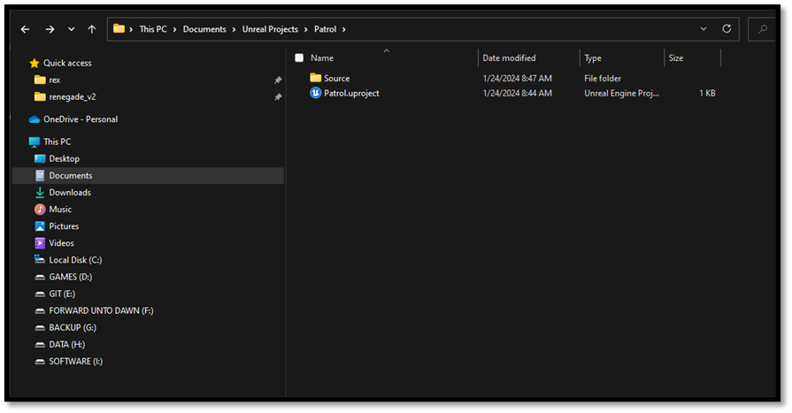
Using UEProjectGenerator instead? Open your empty project folder in VS Code, run the extension's GenProjectFiles command and select your engine version. It creates the .uproject, the Source directory, a module with its Public and Private folders, both .Target.cs files, the module's .Build.cs, its {modulename}.h/.cpp, a Log.h/Log.cpp, and the batch files from the Quality of Life chapter. Nothing in this chapter or the next one needs typing out. Read them anyway and check each generated file against what they describe. Double-check that EngineAssociation in the .uproject matches the engine you installed.
The .uproject File
A .uproject file, short for "Unreal Project File," is the entry point and configuration file for an Unreal Engine project. It's a JSON-formatted file that contains essential information about the project, such as its name, description, and the list of modules and/or plugins it uses. An Unreal Project File is recognized by the UnrealVersionSelector, this setting is stored in the your registry by Unreal when you installed it. The following attributes can be found within a .uproject file:
| Property | Description |
|---|---|
| FileVersion | Descriptor version number. |
| EngineAssociation | Specifies the engine to open the project with. Allows for opening the correct engine version when double-clicking on a project file. Differentiates between editor versions for upgrade/downgrade UI flow. For Launcher users, it holds a stable version string such as "5.8". For Perforce or Git users, it's left blank, allowing determination of the engine based on the directory hierarchy. For source build users with a foreign project, uses a random identifier for engine mapping. For users with the engine mounted through a Git submodule, can be manually edited as a relative path. |
| Category | Category to show under the project browser. |
| Description | Description to show in the project browser. |
| Modules | List of all modules associated with this project. |
| Plugins | List of plugins for this project, which may be enabled or disabled. |
| TargetPlatforms | Array of platforms that this project is targeting. |
| EpicSampleNameHash | A hash used to determine if the project was forked from a sample. |
| PreBuildSteps | Custom steps to execute before building targets in this project. |
| PostBuildSteps | Custom steps to execute after building targets in this project. |
| Enterprise | Indicates if this project is an Enterprise project. |
| DisableEnginePluginsByDefault | Indicates that enabled by default engine plugins should not be enabled unless explicitly enabled by the project or target files. |
Note:
When project file association is not working properly one can simply run UnrealVersionSelector.exe -fileassociations from the Unreal Engine Binaries. You could refer to the following files for proper debugging capabilities.
For more information about the Project Descriptor please visit the following files:
The following is an example descriptor of an Unreal Project:
{
"FileVersion": 3,
"EngineAssociation": "5.8",
"Category": "",
"Description": "",
"Modules": [
{
"Name": "PatrolCore",
"Type": "Runtime",
"LoadingPhase": "Default"
},
{
"Name": "PatrolGame",
"Type": "Runtime",
"LoadingPhase": "Default"
}
]
}
Modules
Modules are the basic building block of Unreal Engine's software architecture. These encapsulate specific editor tools, runtime features, libraries, or other functionality in standalone units of code.
When the project file is loaded into memory it is stored within a FProjectDescriptor which contains all the information contained within a .uproject file. Each .uproject file when containing source files is accompanied with a list of modules and/or plugins available to the project. Modules have their own set of attributes as specification when and how they should be loaded by the engine, all information is stored within a structure called FModuleDescriptor. The following attributes can be found within a module definition:
| Property | Description |
|---|---|
| Name | Name of this module. |
| Type | Usage type of the module. |
| LoadingPhase | Specifies when the module should be loaded during the startup sequence. |
| PlatformAllowList | List of allowed platforms for the module. |
| PlatformDenyList | List of disallowed platforms for the module. |
| TargetAllowList | List of allowed build target types for the module. |
| TargetDenyList | List of disallowed build target types for the module. |
| TargetConfigurationAllowList | List of allowed build configurations for the module. |
| TargetConfigurationDenyList | List of disallowed build configurations for the module. |
| ProgramAllowList | List of allowed programs for the module. |
| ProgramDenyList | List of disallowed programs for the module. |
| AdditionalDependencies | List of additional dependencies required for building this module. |
Note: For more information about the Module Descriptor please visit the following files:
The following is an example descriptor of a single module: This does not function on it's own, it needs to be encapsulated by either an Unreal Project or an Unreal Plugin
{
"Name": "PatrolCore",
"Type": "Runtime",
"LoadingPhase": "Default"
}
Plugins
Last architectural piece of the Unreal Engine are plugins, due to the complexity of UE plugins I will not go into full detail here rather give you a brief overview of what they are and how to use them.
Plugins are collections of code and data that developers can easily enable or disable within the Editor on a per-project basis. Plugins can add runtime gameplay functionality, modify built-in Engine features (or add new ones), create new file types, and extend the capabilities of the Editor with new menus, tool bar commands, and sub-modes. Many of the engine's own subsystems are designed to be extended through plugins.
The main difference between modules and plugins is that plugins (usually) will contain one or more modules, and can also optionally contain their own content. So in a sense they’re a higher level construct than a module. You can see them as a sub-project within your main project so to speak. Each plugin if they have source code will have their own Source folder, with the accompanied Binaries folder that contains the compiled code for that plugin. They can have their own Content folder that contains Assets specific for that Plugin.
Last I'll leave you with an overview of some of the more common attributes of a Plugin that you need to be aware of, this data is stored in a structure called FPluginDescriptor, you'll notice that they are quite similar to the ones of an Unreal Project:
| Property | Description |
|---|---|
| FileVersion | Descriptor version number. |
| Version | Version number for the plugin. The version number must increase with every version of the plugin, so that the system can determine whether one version of a plugin is newer than another, or to enforce other requirements. This version number is not displayed in front-facing UI. Use the VersionName for that. |
| VersionName | Name of the version for this plugin. This is the front-facing part of the version number. It doesn't need to match the version number numerically, but should be updated when the version number is increased accordingly. |
| FriendlyName | Friendly name of the plugin. |
| Description | Description of the plugin. |
| Category | The name of the category this plugin. |
| DocsURL | Documentation URL string. |
| MarketplaceURL | Store URL for this plugin. Embedded into projects that enable the plugin so a user who does not have it installed can be sent somewhere to get it. The field name still says "Marketplace"; the storefront it points at was rebranded to Fab in late 2024. A good reminder that descriptor field names are frozen by backwards compatibility and do not always describe the world as it is now. |
| SupportURL | Support URL/email for this plugin. |
| EngineVersion | Version of the engine that this plugin is compatible with. |
| EnabledByDefault | Whether this plugin should be enabled by default for all projects. |
| CanContainContent | Can this plugin contain content? |
| IsBetaVersion | Marks the plugin as beta in the UI. |
| Installed | Signifies that the plugin was installed on top of the engine. |
| Modules | List of all modules associated with this plugin. |
For more information about Plugins I will refer you to the Official Unreal Documentation about Plugins.
Note: For more information about the Plugin Descriptor please visit the following files:
The following is an example descriptor of an Unreal Plugin
{
"FileVersion": 3,
"Version": 1,
"VersionName": "5.8.0",
"FriendlyName": "Advanced Locomotion System Community",
"Description": "Performance optimized community version of LongmireLocomotion's Advanced Locomotion System V4",
"Category": "Animation",
"CreatedBy": "Doga Can Yanikoglu",
"CreatedByURL": "https://github.com/dyanikoglu",
"DocsURL": "https://github.com/dyanikoglu/ALS-Community",
"SupportURL": "https://github.com/dyanikoglu/ALS-Community/issues",
"EngineVersion": "5.8.0",
"EnabledByDefault": true,
"CanContainContent": true,
"IsBetaVersion": false,
"IsExperimentalVersion": false,
"Installed": false,
"Modules": [
{
"Name": "ALSV4_CPP",
"Type": "Runtime",
"LoadingPhase": "Default",
"AdditionalDependencies": [
"Engine",
"AIModule",
"GameplayTasks",
"PhysicsCore"
]
}
],
"Plugins": [
{
"Name": "Niagara",
"Enabled": true
},
{
"Name": "EnhancedInput",
"Enabled": true
}
]
}
Populating the .uproject file
Now that we understand what a Unreal Project file is and how it is structured let's complete our own.
For those who setup the environment variables, this should open up VS Code within the current directory
- Open VS Code within your project directory
- CTRL + L ( to focus the address bar )
- Type: code .
- Press Enter
For those who have not setup the environment variables, this should open up VS Code within the current directory
-
Open VS Code within your project directory
- Right Click somewhere within your folder
- Select: Show more options
- Select: Open with Code
-
Create a {modulename}Core sub directory within the Source directory
- A good convention for naming modules would be to start each module with your {projectname}
- {projectname}Core
- {projectname}AI
- {projectname}GamePlay
- A good convention for naming modules would be to start each module with your {projectname}
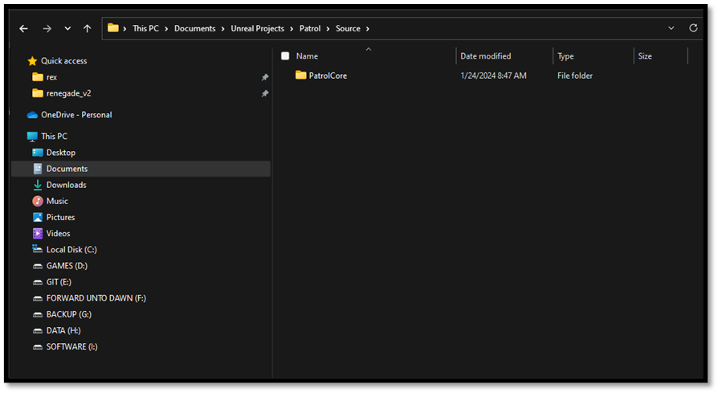
- Open the .uproject file
- Type: uuproj
- This should trigger a snippet that we setup earlier
- Verify the EngineAssociation is correct
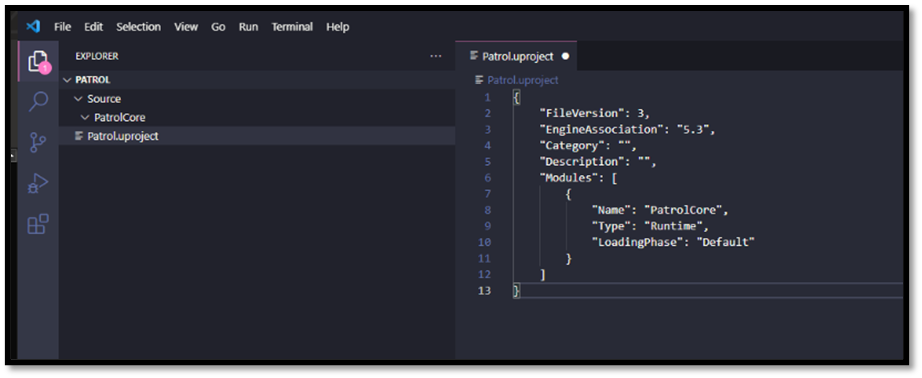
Note: Additional modules and/or plugins that are required for your project also go here. The following is an example when multiple modules are required:
{
"FileVersion": 3,
"EngineAssociation": "5.8",
"Category": "",
"Description": "",
"Modules": [
{
"Name": "PatrolCore",
"Type": "Runtime",
"LoadingPhase": "Default"
},
{
"Name": "PatrolGame",
"Type": "Runtime",
"LoadingPhase": "Default"
}
]
}
Build Targets
Now that the initial setup for our project is setup we have can move on to setting up a build target. We will require a Target Rules Definition file for this. It will tell the Unreal build system how to build our project. Supported target types are as followed:
| Type | Description |
|---|---|
| Game | A standalone game which requires cooked data to run. |
| Client | Same as Game, but does not include any server code. Useful for networked games. |
| Server | Same as Game, but does not include any client code. Useful for dedicated servers in networked games. |
| Editor | A target which extends the Unreal Editor. |
| Program | A standalone utility program built on top of the Unreal Engine. |
Targets are declared through C# source files with a .Target.cs extension, and are stored under your project's Source directory. Each .Target.cs file declares a class deriving from the TargetRules base class, and sets properties controlling how it should be built from its constructor. When asked to build a target, UnrealBuildTool will compile your .Target.cs file and construct the class inside it to determine its settings.
The name of the class must match the name of the file it's declared in followed by 'Target' (so for example, Patrol.Target.cs defines the class PatrolTarget). The typical structure of a target file is as follows:
using UnrealBuildTool;
using System.Collections.Generic;
public class PatrolTarget : TargetRules
{
public PatrolTarget(TargetInfo Target) : base(Target)
{
Type = TargetType.Game;
DefaultBuildSettings = BuildSettingsVersion.V7;
IncludeOrderVersion = EngineIncludeOrderVersion.Unreal5_8;
// Other properties go here
}
}
Numerous properties are accessible from the base class, the details of which are too extensive to cover within this page. For a comprehensive list of all available properties, I recommend consulting the Official Unreal Documentation or examining the Source Code (Regrettably, not all properties are exhaustively described within the documentation.). However, I'd like to direct your attention to two properties that may prove particularly useful.
- DefaultBuildSettings Which engine version's default build settings this target wants. Every few releases Epic changes a default: a warning level, a language setting, whether some legacy behaviour is still on. Rather than silently changing your build, they bump this enum. Your target keeps the old defaults until you opt in. The values are
BuildSettingsVersion.V1throughV7, plusLatest. Unreal Engine 5.8 expectsV7, and UnrealBuildTool will refuse to compile a target whose value does not match what the installed editor was built with. - IncludeOrderVersion Which engine version's header include order to assume, as
EngineIncludeOrderVersion.Unreal5_8and so on. Unreal's headers historically relied on being included in a particular order; as that gets cleaned up, code written against an older ordering can stop compiling. This property lets you keep the old ordering while you fix things, and it is deliberately separate fromDefaultBuildSettings, so moving one does not move the other. - ExtraModuleNames List of additional modules to be compiled into the target.
Note: these enums grow with every release, so do not take the values above as permanent. The definitive list is the BuildSettingsVersion and EngineIncludeOrderVersion enums in {UE-Root}/Engine/Source/Programs/UnrealBuildTool/Configuration/TargetRules.cs. This is the first of several places in this book where reading the engine source is faster and more reliable than reading documentation about it.
Populating the Target Rules
As mentioned the Target Rule Definitions need to be stored under your project's Source directory. So let's do that now.
- Navigate to your Source directory
- Create a new Target Rules file
{projectname}.Target.cs, declaringclass {projectname}Target- We can use the snippet umt to autocomplete this file
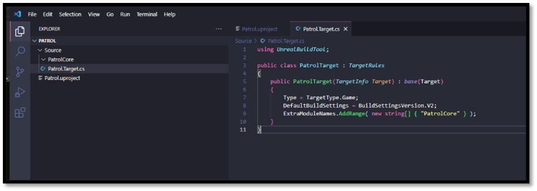
- Navigate to your Source directory again
- Create a second Target Rules file
{projectname}Editor.Target.cs, declaringclass {projectname}EditorTarget- We can use the snippet umt to autocomplete this file
- Change the Target Type within this Editor Target Rules file to
TargetType.Editorinstead ofTargetType.Game
Note: the target name is what you pass to Build.bat later on. Patrol.Target.cs gives you a target called Patrol, and PatrolEditor.Target.cs gives you PatrolEditor, which is exactly what the build chapter invokes. Targets are named after the project, not after a module; modules are listed inside a target via ExtraModuleNames.
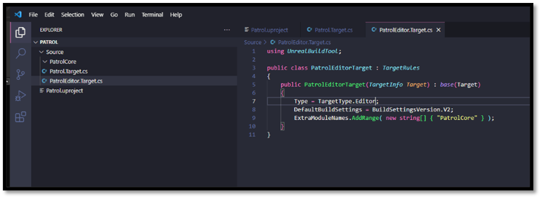
Wrap up
That's it for the creation of our project, in the next section we will discuss how we can setup our Unreal Project properly by adding source code and Build Rule Definition files. Within this section we learned that the .uproject file tells Unreal Editor that it can open this directory as an Unreal Project using the specified version. It also specifies that when the Editor opens this project, it should find and load the DLL for the module called "PatrolCore". The .Target.cs file tells the Unreal Build System that it can build all the necessary code for this project by building the "PatrolCore" module.
Setup an Unreal Project from Scratch
In the previous section we looked at what a .uproject file is and how it relates to the modules and plugins defined within your project, along with the Target Rule Definitions, which outline the specifications for building a project. With the project now established, let's proceed to incorporate some source code for the module we've created. By now, you've likely recognized the common convention in Unreal Engine to organize a module's source code into Public and Private subdirectories. The Public directory houses headers that necessitate visibility to other modules, while the Private directory encompasses all implementation details specific to this module.
Let's start by doing that.
- Navigate to your Source/{projectname}{modulename} directory
- Add a Private directory
- Add a Public directory
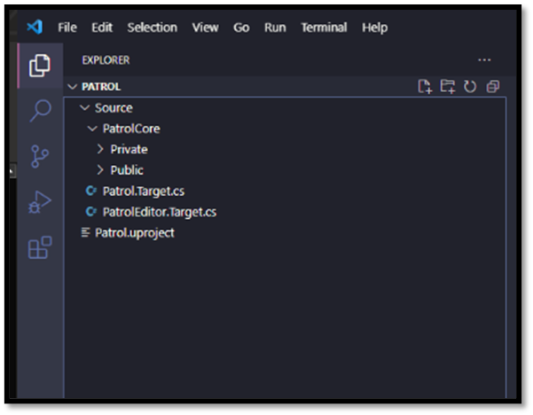
Module Build Rules
Before we add any source code we will need an additional C# file, namely the Module Build Rules. As already mentioned Modules are the building blocks of UE. The engine is implemented as a large collection of modules, and games supply their own modules to augment them. Each module encapsulates a set of functionality, and can provide a public interface and compile environment (with macros, include paths, and so on) for use by other modules. Modules are declared through C# source files with a .build.cs extension, and are stored under your project's Source directory. The C++ source code belonging to a module is stored next to to the .build.cs file, or in subdirectories of it. Each .build.cs file declares a class deriving from the ModuleRules base class, and sets properties controlling how it should be built from its constructor. These .build.cs files are compiled by UnrealBuildTool and constructed to determine the overall compile environment.
The typical structure for a .build.cs file is as follows.
using UnrealBuildTool;
using System.Collections.Generic;
public class PatrolCore : ModuleRules
{
public PatrolCore(ReadOnlyTargetRules Target) : base(Target)
{
// Settings go here
}
}
Numerous properties are accessible from the base class, the details of which are too extensive to cover within this page. For a comprehensive list of all available properties, I recommend consulting the Official Unreal Documentation or examining the Source Code (Regrettably, not all properties are exhaustively described within the documentation.). However, I'd like to direct your attention to some properties that may prove particularly useful.
-
PCHUsage What type of PCH to use for this module
- Default: Engine modules use shared PCHs, game modules do not
- NoPCHs: Never use any PCHs.
- NoSharedPCHs: Never use shared PCHs. Always generate a unique PCH for this module if appropriate
- UseSharedPCHs: Shared PCHs are OK!
- UseExplicitOrSharedPCHs: Shared PCHs may be used if an explicit private PCH is not set through PrivatePCHHeaderFile. In either case, none of the source files manually include a module PCH, and should include a matching header instead.
-
IWYUSupport what extent a module supports include-what-you-use
- None: code does not even compile. IWYU needs to skip this module entirely.
- KeepAsIs: Module could be modified with iwyu but we want it to stay the way it is and handle changes manually.
- KeepAsIsForNow: Module is parsed and processed. This means that from the outside it is stripped for includes even though the files are not modified. This can be used to defer iwyu work on a module. When it comes to transitive includes this module is seen as modified from the outside.
- KeepPublicAsIsForNow: Same as KeepAsIsForNow but will allow iwyu to update private headers and cpp files.
- Full: Full iwyu support. When running with -Mode=IWYU this module will be modified if needed
-
PublicDependencyModuleNames List of public dependency module names (no path needed) (automatically does the private/public include). These are modules that are required by our public source files.
-
PrivateDependencyModuleNames List of private dependency module names. These are modules that our private code depends on but nothing in our public include files depend on.
-
CppStandard Which C++ language version to compile this module with. Unreal 5.8 compiles at C++20 by default and requires at least C++20, so you rarely need to set this. It exists all the same, and it is per-module, which is how a project can move one module forward without moving all of them.
The distinction between those two dependency lists is worth getting right rather than copying whatever compiles. A public dependency is propagated: anything that depends on your module also gets that module's include paths. A private dependency stops at your module boundary. Putting everything in the public list works, and quietly couples every downstream module to every dependency you ever added, which is the module-level version of the reference problem described in For Designers and Artists.
Populating a Build Rules
- Navigate to Source/{projectname}{modulename} directory
- Create a new Module Build Rule file
- {projectname}{modulename}.Build.cs
- We can use the snippet umb to autocomplete this file
- Specify the dependent libraries for this module
- Core
- CoreUObject
- Engine
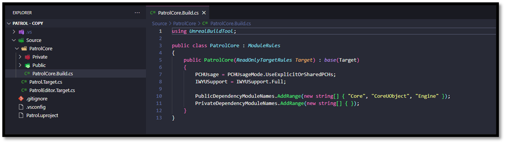
Module Source Code
Every module necessitates, at minimum, a module definition, typically found in a source file bearing the same name as the module. This module definition help Unreal know how to handle our module when it loads and unloads it. To start, we'll add a public header named "{projectname}{modulename}.h" and a matching "{projectname}{modulename}.cpp". Here, we register our module implementation as the primary module for our game. Each project mandates precisely one module designated as the primary game module. This primary module functions as the entry point for the project. When your project loads, the engine loads this primary module first, and that module initializes whatever else it needs. Everything downstream can therefore count on it already being loaded, which is what makes the load order predictable. Without one, there would be no defined place for the engine to start.
Note: For more information about the Module Loading please visit the following files:
For following the loading and unloading process of the Modules look for StartupModule and ShutdownModule
Creating a Module Definition
- Navigate to Source/{projectname}{modulename}/Public
- Create a new Header file
{projectname}{modulename}.h, the same name as the module- We can use the snippet umh to autocomplete this file
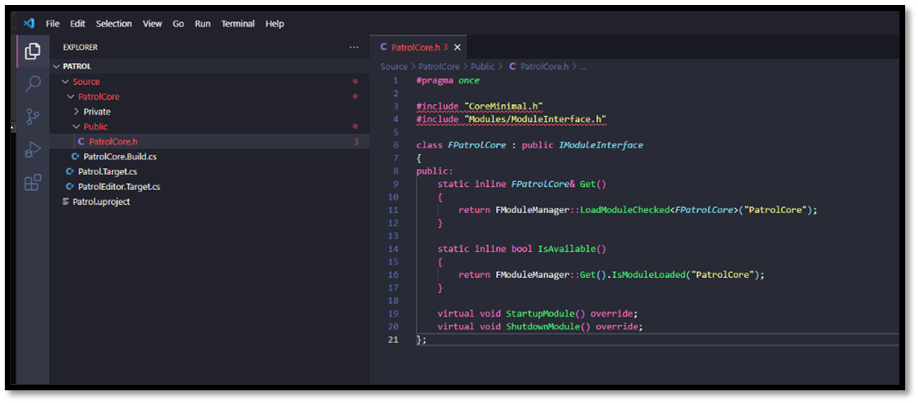
- Navigate to Source/{projectname}{modulename}/Private
- Create a new Source file
{projectname}{modulename}.cpp, again matching the module name- We can use the snippet umcp to autocomplete this file
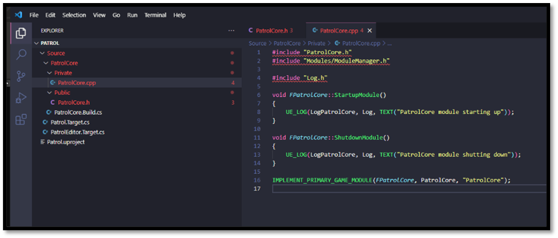
We will also add a Log category that is specific to our module. Log.h goes in Public so other files in the module (and, if you ever want it, other modules) can include it, and Log.cpp goes in Private because the category only needs to be defined once, in one translation unit. Now from any source file within our module we can #include Log.h and add log output using an Unreal log line (UE_LOG). This will show up in the console output and the log files for our game, and we can filter by our category to get output from this module specifically.
- Navigate to Source/{projectname}{modulename}/Public
- Create a new Header file
- Log.h
- We can use the snippet ulh to autocomplete this file
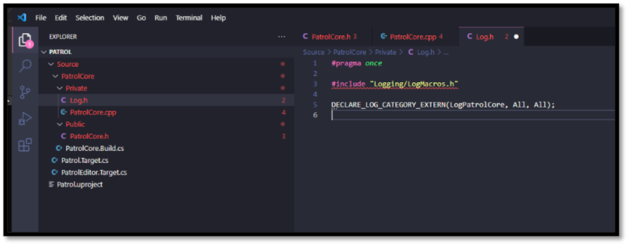
- Navigate to Source/{projectname}{modulename}/Private
- Create a new Source file
- Log.cpp
- We can use the snippet ulc to autocomplete this file
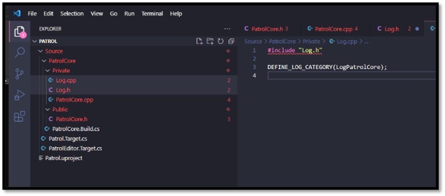
Wrap up
That's it for the setup of our project, in the next section we will discuss how we can build our Unreal Project.
Build an Unreal Project from Scratch
Now that we have an entry point to our project by setting up our primary module we have a project that is ready to be build from Source. We have done all this without the usage of Visual Studio or Unreal Editor, not because they are bad tools but just because this gives us a chance to see what's happening under the hood. Unreal uses the Visual C++ compiler and linker and it recommends Visual Studio as an officially supported IDE, but it does not actually use Microsoft's build system. Instead Unreal has it's own cross-platform build system, which is why we need to write those C# files to configure our target and its modules. When you generate Visual Studio project files, those solution and project files aren't actually an essential part of the build. They're just Visual Studio compatible frontend for Unreal's build process. If we navigate to {UE-Root}/Engine/Build/BatchFiles directory we can see a file called Build.bat. This just calls UnrealBuildTool.exe, which invokes builds. When you build your project in Visual Studio, it's essentially just running this Batch file.

This batch file has 4 essential steps:
- Setting up the environment It checks if the batch file exists in the expected directory and sets up the environment for the build process.
- Building the UnrealBuildTool It verifies the presence of the UnrealBuildTool and compiles it if necessary, either using Visual Studio or dotnet, depending on the context.
- Running the UnrealBuildTool It executes UnrealBuildTool with the provided arguments, which typically include the game name, platform name, configuration name, and any additional arguments required for the build process.
- Error Handling It includes error handling mechanisms to detect and report errors that may occur during the build process, such as missing dependencies, compilation failures, or missing files.
Unreal Build Tool
The Unreal Build Tool (UBT) is the program that builds Unreal source code across build configurations. Unreal supports Windows, macOS, Linux, iOS, Android, PlayStation, Xbox and VR/AR devices, and UBT hides the platform-specific differences between them behind one build system. Its job is to compile and link your code together with the engine code your project depends on. As we already discussed Unreal is split into many modules. Each module has a .build.cs file that controls how it is built, including options for defining module dependencies, additional libraries, include paths, etc. By default, these modules are compiled into DLLs and loaded by a single executable. Whether you get that modular layout or a single monolithic executable is decided by LinkType in your .target.cs file. Editor targets are modular so the editor can load and reload module DLLs, while shipping game targets are usually monolithic. There is also a machine-wide BuildConfiguration.xml (in %APPDATA%\Unreal Engine\UnrealBuildTool\) that lets you change UnrealBuildTool's own defaults, which we come back to in Quality of Life. Anyway, an entire article could be written about UBT. For more information about UBT I would like to advise you to read the Official Documentation.
Using UBT
We've already established that we don't require Visual Studio to build our project, we can leave it out of building our project too, while still making use of UBT. All we have to do is invoke Build.bat and pass in a few arguments. We need to tell it which Target we want to build, then we need to give it a platform and a build configuration. Then we just pass in the path to the .uproject file, and we can kick off the build.
- Open your terminal
- CTRL + Tilde (~)
- Type
{UE-BatchFiles}/Build.bat- e.g.
C:\Program Files\Epic Games\UE_5.8\Engine\Build\BatchFiles\Build.bat
- e.g.
- Define a Target that you would like to build
{projectname}Editor
- Define a Platform that would like to build for
Win64
- Define a build configuration
Development
- Define a path to the .uproject
- Define
-waitMutexand-NoHotReload
The full command should look like this:
{UE-BatchFiles}/Build.bat PatrolEditor Win64 Development "{project_path}/Patrol.uproject" -waitMutex -NoHotReload
Note: if the path contains spaces, wrap it in straight double quotes (") and start the command with &, PowerShell's call operator.
& "{UE-BatchFiles}/Build.bat" PatrolEditor Win64 Development "{project_path}/Patrol.uproject" -waitMutex -NoHotReload
UnrealBuildTool can only build one target at a time, so -waitMutex tells it to wait for any in-progress build to finish instead of failing outright, which matters the moment you have a batch file and the editor both able to trigger builds.
-NoHotReload deserves more explanation than it usually gets, because the name misleads people. Hot Reload is a specific, older mechanism: when the editor is running and you build, UBT writes out uniquely-named DLLs (UnrealEditor-PatrolCore-0002.dll and so on) which the running editor then loads on top of the old ones. It works, it leaves those numbered files lying around, and it has largely been superseded. Passing -NoHotReload says "I am building from a terminal, nothing needs patching in place, just produce normal binaries."
That is not the same thing as giving up on fast iteration. The modern replacement for Hot Reload is Live Coding, which patches running code in memory and is on by default. It is triggered from the editor rather than from UBT, so it is unaffected by this flag. The Iteration Speed chapter covers when it is the right tool and when you still need a full rebuild.
Once the build gets going, we start getting build artifacts in the Intermediate directory. Eventually, Unreal Header Tool parses our source and spits out generated source files. UHT is looking for the UCLASS, USTRUCT, UFUNCTION and UPROPERTY macros and generating the reflection code that makes them mean anything at runtime. It is itself a C# program these days, which is part of why the .NET workload was not optional back in the setup chapter. Then everything gets compiled to object code, and finally our module is linked together into a DLL that the editor can load. We can see that DLL in the Binaries directory this file contains all the code we've written in our {modulename}Core module, in a compiled binary form. Next to that is the corresponding PDB, or symbol file this essentially contains debugging information so that symbols in the compiled binary version of our code can be traced back to the corresponding functions, variables, and other identifiers in the source code. We also get a .modules file, which is just a bit of metadata telling the editor which DLLs should be loaded for this module, and which Engine version those DLLs were compiled against this is why you'll get an error if you build editor binaries on one version of Unreal, then try to open them with a different version. There's also a .target file, which is just more metadata spit out by the build system which is not important for us.

Wrap up
That's it for building our project, in the next section everything will come together, and we will start opening our project in Editor, Editor Standalone and Running our game.
Open an Unreal Project from Scratch
We've pieced together our project using the .uproject file and Target Rule Definitions. We've got our entry point sorted by making use of the primary module and declared the dependencies within Module Build Rules. After all that, we've asked UBT to build our project and conjured up a DLL that the editor can load. Now we can let the Designers, Artists, and fellow Developers loose to tinker, tweak, and test-drive our creation.
Open in Editor
To open your project:
- Run
{UE-Binaries}/UnrealEditor.exe - Define the path to your .uproject
- Define -log
The full command should look like this:
{UE-Binaries}/UnrealEditor.exe "{project_path}/Patrol.uproject" -log
Note: if the path contains spaces, wrap it in straight double quotes (") and start the command with &, PowerShell's call operator.
Since this is our first time booting up the project, we can see the Editor writing out some new files in our project directory.
- Saved contains logs and other files created at runtime, either by the game or the editor
- Derived Data Cache where the editor can cache data that it has built for specific assets
- Content which maps directly to our project's assets in the Content Browser
- Config project configuration changes have been stored in .ini files
Derived Data Cache
Small word about Derived Data Cache (DDC) folder, Many Unreal Engine Assets require additional "derived data" before they can be used. (A simple example would be a Material that has a shader). Before the Material can be rendered, the shader must be compiled for the platform the editor is running on. Because the derived data is large, and at times may need regenerating, it is not checked into source control. Instead it's kept in the Derived Data Cache (DDC). Depending on how your project and system are configured, there can be several DDC caches in a hierarchy that ranges from fast to slow. When assessing derived data, your system will do the following to determine how quickly it can access it:
- When a piece of derived data is needed, the fastest cache is checked first, then the next fastest, and so on, until the data is found.
- When the data is found, it is copied into the fastest local cache so that it is quicker to access next time.
- If the data is not found, then it is first generated, then asynchronously copied into the caches so it is available for you (and potentially your team) in the future.
Content stored in the DDC is disposable, and can be regenerated at any time using the data stored in the .uasset file. Storing these derived formats externally makes it possible to easily add or change the formats used by the engine without needing to modify the source Asset file.
For more information about DDC please visit the Official Documentation.
Altering our project
Before we show the project off, I'm going to shake things up a bit and tweak the defaults to give it some extra flavor. When we fire up the "Standalone Editor" and "Standalone Game" for testing, we'll be making sure our special map and engine settings are all loaded up correctly. To view the changes I made please navigate to the following page.
Open in Standalone Editor
Opening the Editor is cool, but as a developer we might not always need full control of the Editor this is why we can specify the -game flag to the previously defined command mentioned in the "Open in Editor" section. Like any program the Unreal Editor accepts different types of command-line arguments. When passing it different arguments the application (in this case the Unreal Editor) will react differently. Previously we only mentioned the command-line argument -log to display a log window while the application is running. When we specify the -game flag we ask the Editor to launch itself as a game client instead of the full application.
Several useful commands to remember when running in Standalone mode are as followed:
| Command | Type | Description |
|---|---|---|
| -log | Flag | Display a log window while the client or server is running. |
| -game | Flag | Mode flag to launch game client. |
| -windowed | Flag | Launch the client in windowed mode. Use in conjunction with -ResX=<HORIZONTAL_RES> -ResY=<VERTICAL_RES>. |
| -fullscreen | Flag | Launch the client in full-screen mode. |
| -ResX=<HORIZONTAL_RES> -ResY=<VERTICAL_RES> | Key-Value Pair | Specify the horizontal (X) and vertical (Y) resolution size for a client. Example: -ResX=1920 -ResY=1080 |
For more information about how to create custom command line arguments, customize command line arguments or other types of command line arguments such as graphics command line arguments please visit the Official Documentation.
To run our the editor as a single game client we run the following command:
{UE-Binaries}/UnrealEditor.exe "{project_path}/Patrol.uproject" -log -game -ResX=1280 -ResY=720
Note: if the path contains spaces, wrap it in straight double quotes (") and start the command with &, PowerShell's call operator.
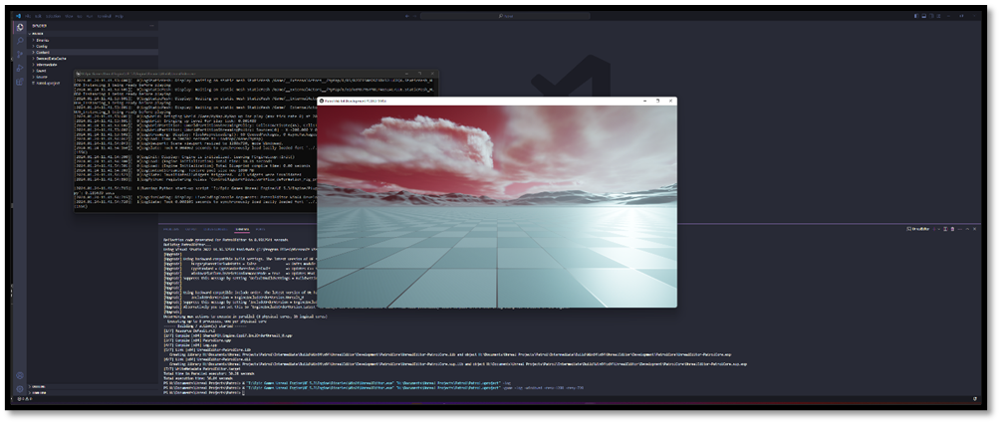
Note: this same thing is reachable without typing anything: right-click the .uproject file and
choose Launch Game. Either way, the important detail is that no cooking is involved. It runs
the game against your uncooked content, straight out of the editor binaries. That makes it a far
better performance reference than Play-In-Editor, which carries all of the editor's overhead along
with it, so if you are trying to judge whether something is actually slow, measure here rather than
in PIE.
This is a fully playable instance of our game. We can fly around and we can use console commands as this is still a development build. This results in a quick way to test out the game in a development setting running from editor binaries. Because we are running from editor binaries we need the full installation of Unreal Engine to run the build. When we want to ship our game and avoid people having to install the entire Engine we need a standalone version of our project, that's what our non-editor target is for, in the next section we will demonstrate how we can run our game without the Editor attached.
Running a Game
In the previous section we learned how we are able to quickly iterate over our game in a development setting, running from editor binaries. But once your game is complete, you can package a release version for distribution. Before an Unreal project can be distributed to users, it must be properly packaged. Packaging ensures that all code and content is up to date and in the proper format to run on the desired target platform.
Building a Game
All we must do to run a standalone game is invoke the same build process, passing in our project's Game target instead of its Editor target. This'll run through the same build process, but instead of linking our individual modules into DLL files, it'll link our project against all the required Engine code and generate a single executable that runs our game, with all the editor-specific functionality stripped out.
- Open your terminal
- CTRL + Tilde (~)
- Type
{UE-BatchFiles}/Build.bat- e.g.
C:\Program Files\Epic Games\UE_5.8\Engine\Build\BatchFiles\Build.bat
- e.g.
- Define a Target that you would like to build
{projectname}
- Define a Platform that would like to build for
Win64
- Define a build configuration
Development
- Define a path to the .uproject
- Define
-waitMutexand-NoHotReload
{UE-BatchFiles}/Build.bat Patrol Win64 Development "{project_path}/Patrol.uproject" -waitMutex -NoHotReload
Note: if the path contains spaces, wrap it in straight double quotes (") and start the command with &, PowerShell's call operator.

Cooking Content
Before running our executable, we must first take the essential step of preparing our content also known as "cooking". Unreal stores content assets in its own internal formats, such as PNG for textures and WAV for audio. However, this content needs to be converted to different formats for the various platforms, either because the platform uses a proprietary format, does not support the format Unreal uses to store the asset, or a more memory- or performance-effective format exists.
That conversion is called "cooking", and you can run it from the command line or from the in-editor tools. On some platforms every asset has to be cooked before the device can load it at all. You should verify with the specifications of the platform they are targeting to ensure compliance with these requirements.
There are two ways to cook content for your projects
- by the book
- on the fly

By the Book
Cook by the book performs the entirety of the cook process ahead of time allowing for the build to deploy the cooked assets all at once rather than as needed while playing the level (if you were using a cook server). This option is useful for developers who are not iterating on individual assets or for those who want the game to perform at full-speed without waiting for a server to deliver the necessary cooked content. Typically, performance testing and playtests will want to use this method.
When performing a cook by the book, there is no extra setup required for the build.
On the Fly
When you choose to cook content on the fly (COTF), it will delay cooking it until after the game has been deployed to the platform. Only the executable and some other basic files are installed, which use network communication with a Cook Server to make requests on-demand as the content is needed. COTF allows for faster iteration for developers who will be making changes to content regularly or those who will only be exploring sections of the game.
To cook on the fly, you will first need to start a Cook Server on a machine which has the full project available to it. This can be either your local machine or a remote server which performs the cook.
Cooking on the fly is specified with the command-line argument: -cookonthefly. This launches a server which waits for a game to connect and then serves the cooked data as needed. Requires -filehostip=<Server IP> on the game's command line to connect with the server.
For more information on how to cook on the fly please visit the Official Documentation
Cooking our Content
Given that we've already executed our entire pipeline via the command line, it's sensible to continue with the cooking process using the same method. We will cook our content By the book as we don't have or own a server to hook up.
- Run
{UE-Binaries}\UnrealEditor-Cmd.exe - Define a Target that you would like to build
{projectname}
- Define a task
run=cook
- Define a target platform
targetplatform=Windows- Additional platforms are added with
+, e.g.-TargetPlatform=Windows+PS5+XSX. You need the matching platform SDK installed for each one.
- Additional platforms are added with
{UE-Binaries}\UnrealEditor-Cmd.exe "{project_path}\Patrol.uproject" -run=Cook -TargetPlatform=Windows
Note: if the path contains spaces, wrap it in straight double quotes (") and start the command with &, PowerShell's call operator.
Other command-line arguments for the cooking process are as followed:
| Option | Description |
|---|---|
| iterate | Specifies the cooker only cook items that are out of date. Without this option, the sandbox directory is deleted and everything is recooked. |
| Map | Specifies the map(s) to build. |
| MapIniSection | Specifies a section from the ini files which contains map names. Cooker will cook all maps specified in the section specified. |
| UnVersioned | Saves all of the cooked packages without versions. These are then assumed to be the current version on load. |
| CookAll | Cooks everything. |
| Compressed | Tells the cooker to compress the cooked packages. |
When a cook complains
Sooner or later a cook will emit a warning that names no asset, something like "cooked packages 2887" followed by a complaint, with no indication of which of those 2887 assets is the problem. Two settings in Project Settings > Cooker turn that from a guessing game into an answer:
- Cooker Progress Display Mode set to show names makes the cooker log the asset it is currently working on, so whatever warning fires next is attributable to the line above it.
- The same setting can show instigators: what pulled this asset into the cook in the first place. This is the more valuable of the two, because the usual reaction to an unexpected asset in a cook is "why is that even in here?", and instigators answer exactly that. It is the cook-time equivalent of the Reference Viewer described in For Designers and Artists.
The same settings are reachable as the cook.displaymode console variable, which is what you want
when the cook is running on a build machine rather than your desk. The full list lives in the
Cooker Settings documentation.
One thing that saves real time: cooking depends on the target platform, not on the build configuration. The editor's Cook button says it cooks "for the selected configuration and target", but the cook commandlet does not take configuration into account. Configuration starts to matter later, at packaging and staging. So switching between Development and Shipping does not require you to re-cook.
After our content is cooked, we end up with a Saved/Cooked directory. This is where our standalone game executable will find all the assets it needs to load at runtime

Now we can run our game this should be functionally the same as running from editor binaries, except we're now using cooked data loaded straight from disk the engine isn't building any assets on demand at runtime. We've still built in the Development configuration, though, so we have access to all the same developer tools.
- Run
{project_path}/Binaries/Win64/{projectname}.exe - Define
-log - Define
-windowed -ResX=1280 -ResY=720
{project_path}/Binaries/Win64/{projectname}.exe -log -windowed -ResX=1280 -ResY=720
Note: if the path contains spaces, wrap it in straight double quotes (") and start the command with &, PowerShell's call operator.

Running a build against someone else's cooked content
There is one more command-line argument to cover here, because it solves a problem that otherwise costs an afternoon. Suppose a bug only reproduces in a build someone else packaged, a Shipping build on Steam for instance, and you want to attach a debugger to it. You cannot debug Shipping comfortably, and re-cooking the whole project locally at the matching revision is slow.
You do not have to. -BaseDir= tells an executable where to consider its installation to be:
{project_path}/Binaries/Win64/{projectname}.exe -BaseDir="C:/path/to/the/packaged/build/Binaries/Win64"
From then on it uses that directory's cooked content, save games, config and logs. Which means you
can build a Development or Debug executable locally, point it at a Shipping build's cooked
data, and step through the problem with full symbols. (-BaseFromWorkingDir is the variant that
infers the same thing from the working directory instead of being told.)
So sure, we don't need to use Visual Studio to build and run our project. That's cool and all but having to invoke this batch file with these specific arguments is kind of a pain in the a**. In the next section we will introduce some quality of life improvements to prevent this.
Quality of Life
In the previous section we noticed that there are a lot of commands we have to enter to work with Unreal from the command line. This however will only slow us down rather than improve iteration speed. Luckily, we as developers can remedy this by introducing a quick fix and make our own batch files that invoke these commands. I will not bore you with writing these files yourself as we did with the snippets for VS Code you can download a script from this GitHub repository that will setup these files for you. I know batch files aren't really the state of the art in build automation, but we're not doing anything fancy here, so this approach works fine. Feel free to upgrade it to your liking.
Additional Unreal Batch Files
If you generated your project with UEProjectGenerator, these batch files (build_editor.bat, run_editor.bat, cook_content.bat and the rest) are already in your project folder. Skip the steps below and carry on from chaining commands. The steps are for the by-hand route.

- Download/Clone the repository to disk
- Copy the contents of the repository (except the .git folder)
- Go to ${project_path}
- Paste repository contents

- Run
setup.py -p=${ue5_path}- e.g.
py setup.py -p="C:\Program Files\Epic Games\UE_5.8"
- e.g.

- Batch scripts to run the Unreal commands should have been generated

What's great about using the command-line is that we can easily chain multiple commands together. If we run build_editor && run_editor, that will build and if and only if the build succeeds, it'll launch the editor. This lets us jump quickly back and forth between code and editor.
VS Code Tasks
An extension that was installed in the development setup chapter was called VS Code Tasks. Now that the batch files have been created we can setup these tasks. You see you can specify certain commands within VS Code without using the terminal. It's like having the "Run" button of Visual Studio but better.

- Create .vscode folder in your {project_directory}
- Add a
tasks.jsonfile to this folder - Fill the contents of this file with commands you would like to execute
- Created tasks will end up at the bottom of the IDE
An example tasks.json looks as follows. Note the "group" field: setting it to "build" on one
task makes Ctrl+Shift+B run that task directly, which is built into VS Code and needs no
extension at all. The Tasks extension adds the status-bar buttons, but you are not stuck if it is
unavailable.
{
"version": "2.0.0",
"tasks": [
{
"label": "Build Editor",
"type": "shell",
"command": "./build_editor.bat",
"windows": {
"command": "./build_editor.bat"
},
"group": "build",
"presentation": {
"reveal": "always",
"clear": true
}
},
{
"label": "Run Editor",
"type": "shell",
"command": "./run_editor.bat",
"windows": {
"command": "./run_editor.bat"
},
"group": "none",
"presentation": {
"reveal": "always",
"clear": true
}
},
]
}
Settings that follow you between projects
Some preferences are not worth setting again in every project you ever open. Unreal reads config
files out of Documents\Unreal Engine\Engine\Config\, and anything you put there overrides the
corresponding setting for every project, every engine install, and every shipped Unreal game on
that machine. The files are named with a User prefix: UserEditorPerProjectUserSettings.ini
for editor preferences, UserInput.ini for input.
The most useful one for this book is the console key. Unreal opens the console with ` by
default, and on a lot of non-US keyboard layouts that key either does not exist or does not register.
Rather than rebinding it per project through the editor UI:
; Documents\Unreal Engine\Engine\Config\UserInput.ini
[/Script/Engine.InputSettings]
+ConsoleKeys=Insert
Now every Unreal project you open, and every Unreal game you play, opens its console with Insert.
Gotcha: these get cached into {project_path}/Saved/Config/WindowsEditor/Input.ini. If a change
here does not seem to take effect, delete that cached file. It regenerates.
Naming your generated solution
If you work on more than one branch or engine version, you will end up with several generated
solutions all called UE5.sln, and no way to tell which window is which. UnrealBuildTool reads a
machine-wide config file at %APPDATA%\Unreal Engine\UnrealBuildTool\BuildConfiguration.xml
(this is the file that actually exists; you will see older material refer to a
BuildConfiguration.cs, which does not):
<?xml version="1.0" encoding="utf-8" ?>
<Configuration xmlns="https://www.unrealengine.com/BuildConfiguration">
<ProjectFileGenerator>
<bPrimaryProjectNameFromFolder>true</bPrimaryProjectNameFromFolder>
</ProjectFileGenerator>
</Configuration>
The solution is now named after its parent folder, so the title bar tells you which checkout you are looking at. The same file is where you would change UnrealBuildTool's other defaults. See the Build Configuration documentation for what else lives there.
Now everything is in place to start working on our new project, in the next section we will test the setup we created with a simple example.
Iteration Speed
Everything in this book so far has been about getting a project to build and run. This chapter is about the thing you will actually spend your days doing: making a change and finding out whether it worked.
That matters more than it sounds. Every change to C++ has to travel the same road: compile, link, load the editor, get into play mode, navigate to the thing you changed. When that road is short you experiment: you try the obvious fix, see it fail, try the next one. When it is long you stop experimenting and start reasoning about what probably happens, because checking is too expensive. Reasoning is slower and less reliable than looking, and it is where most wasted afternoons come from.
So the goal is not "be fast" in the abstract. It is to keep the cost of checking low enough that you never talk yourself out of checking.
Where the time actually goes
A full loop has roughly these stages:
| Stage | What happens | Typical cost |
|---|---|---|
| Compile | Your changed .cpp files are compiled | seconds |
| UHT | Reflection code is regenerated, if you touched a UCLASS/UPROPERTY/UFUNCTION | seconds |
| Link | Object files become a module DLL | seconds to a minute |
| Editor boot | The editor process starts and loads every module | tens of seconds |
| Map load | Your level and everything it references loads | seconds to minutes |
| Reach the thing | You walk/fly/click your way to the state you want to test | as long as you let it |
Notice that the compile, the part people think of as "the build", is usually the cheapest stage. The expensive stages are the ones after it. That is why the rest of this chapter is mostly about avoiding the editor restart and avoiding the manual navigation, not about making the compiler faster.
Live Coding
Live Coding compiles your changed code and patches it into the already running editor process. You keep the editor you already have open, the map it already loaded, and your position in it. It is on by default in a new engine install, and it is the single biggest win available to you.
- Trigger it with
Ctrl+Alt+F11, from either the editor or your IDE. - Configure it in Editor Preferences > General > Live Coding.
What it can and cannot do
The honest version, because knowing where the boundary is the difference between Live Coding being useful and Live Coding being something you stop trusting:
Reliable: changing the body of an existing function. Tweaking a constant. Fixing a calculation. Adding a log line. This is the overwhelming majority of what you do while debugging, and it is where Live Coding shines.
Handled, via Object Reinstancing: adding functions, adding UPROPERTY members, changing class
structure. Live Coding will rebuild existing instances of affected objects so they match the new
layout. Object Reinstancing is on by default and should stay on. With it disabled, Live Coding
can still apply small changes, but structural ones behave unpredictably rather than failing cleanly,
which is the worst possible outcome.
Not covered: Live Coding is unavailable when launching on consoles and mobile devices.
Restart anyway when: things get strange. Live Coding patches a process that has been running and mutating for a while. If behaviour stops making sense after several patches in a row, restart before you spend an hour debugging a ghost. The full rebuild loop from Testing the Setup is your ground truth precisely because it has no state.
Live Coding is not Hot Reload
These get conflated constantly, including in older material you will find online.
Hot Reload is the older mechanism. When the editor is running and you build, UnrealBuildTool
emits uniquely-numbered DLLs (UnrealEditor-PatrolCore-0002.dll) that the running editor loads on
top of the old ones. It works, it litters your Binaries folder with numbered files, and it has
largely been superseded.
Live Coding patches machine code in the running process instead, which is both faster and less disruptive.
This is why the build commands in this book pass -NoHotReload: we are building from a terminal, we
do not want the numbered-DLL behaviour, we want plain binaries. That flag has nothing to do with Live
Coding and does not disable it.
One Live Coding preference worth turning off if you write code in a text editor rather than an IDE: Automatically Compile Newly Added C++ Classes. It fires the moment a new class appears, which is usually the moment the file is still empty. Quality of Life shows how to set preferences like this once for every project instead of per project.
Skip the editor entirely
Most of the time you do not need the editor at all, only the game. Running the game directly skips editor UI initialisation, skips all editor-only subsystems, and gives you a much more honest picture of performance than Play-In-Editor does:
{UE-Binaries}/UnrealEditor.exe "{project_path}/Patrol.uproject" -game -log -ResX=1280 -ResY=720
No cooking required: this runs against your uncooked content out of the editor binaries. See Open an Unreal Project for the full flag table.
Driving your code from the console
The other half of iteration speed is not rebuilding faster, it is not having to reach the thing you want to test. If your bug happens in the third room after a two-minute intro, the fix is not a faster compile. It is being able to put the game into that state on demand.
The console is how you do that, and Unreal gives you several routes into it with very different amounts of setup.
Exec functions
The classic approach. Tag a UFUNCTION with Exec and it becomes a console command:
UFUNCTION(Exec, Category="Console Commands")
void GiveAmmo(int32 Amount);
The catch, and the reason people get stuck here, is that Exec functions are only routed from a
handful of classes: the PlayerController, the GameMode, the Pawn, the HUD, the
CheatManager and a few others. Putting Exec on a function in some arbitrary actor compiles fine
and then silently never fires, which is a miserable thing to debug.
The usual home for these is a CheatManager subclass assigned to your PlayerController. That is
also the right place for them architecturally: UCheatManager is only instantiated in non-shipping
builds, so your debug commands cannot accidentally ship.
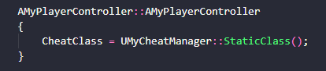
ke, or how to call any UFUNCTION with no setup at all
This is the one that deserves to be better known, because it removes the setup step entirely.
ke <ObjectName> <FunctionName>
ke * <FunctionName>
ke is short for Kismet Event, Kismet being Blueprints' predecessor, which is why the name
tells you nothing useful today. You can also spell it KismetEvent; capitalisation does not matter.
The reason to reach for it: it works on any UFUNCTION. Not just Exec ones. Not just
BlueprintCallable ones. If the function is visible to the reflection system, ke can call it. No
CheatManager, no Exec tag, no custom console command, no temporary debug UI, no button wired into a
widget just to trigger one thing.
* calls the function on every matching object, which is usually what you want:
ke * Jump
Parameters are positional, and struct parameters use Unreal's text format:
ke Character LaunchCharacter (X=0,Y=0,Z=1000) 1 1
The level Blueprint equivalent is ce <EventName>, short for cause event.
The caveat, because it will bite you. Matching is done on the object name, which is not the same thing as the label shown in the World Outliner. They happen to coincide for the first instance of an actor freshly dragged into a level, which is exactly why so many people assume they are the same thing and then find the trick "doesn't work". The moment you have several instances of the same actor, the name form is ambiguous and you will get results you did not intend. Use
*, or use the class name, or find the real object name first.obj list class=YourClassprints it, and the Profiling chapter covers that command properly.
Like most debugging facilities, ke is a non-shipping-build tool.
A button in the Details panel
When clicking beats typing, particularly when a designer is going to be the one clicking,
CallInEditor puts a button on the actor's Details panel:
UFUNCTION(CallInEditor, Category="Debug")
void RebuildSpawnPoints();
Console variables and commands from C++
For things you want to toggle rather than trigger:
static TAutoConsoleVariable<int32> CVarShowPatrolPaths(
TEXT("patrol.ShowPaths"), 0,
TEXT("Draw patrol paths in the world. 0 = off, 1 = on."),
ECVF_Cheat);
static FAutoConsoleCommand CCmdResetPatrols(
TEXT("patrol.Reset"),
TEXT("Reset every patrol to its starting point."),
FConsoleCommandDelegate::CreateStatic(&ResetPatrols));
Note the help text. It is not decoration, it is what the next two commands print.
Finding out what already exists
Half the time the command you need is already there. Three ways to find it:
DumpConsoleCommandslists every registered console command.<cvarname> ?prints that console variable's help text and current value. This is worth building a habit around; the alternative most people fall into is searching the engine source for the variable name, which works but takes a hundred times longer.DumpCVarswrites every console variable and its current value to the log. Usually far too much to read directly, but exactly right when you want to diff two configurations.
Two more commands
DumpTickslists every actor currently ticking. When something is costing frame time and you do not know what, this is often a one-line answer: things tick that nobody meant to leave ticking.BugItputs aBugItGocommand on your clipboard containing your exact camera position and rotation. Paste it into a bug report and whoever picks it up lands on the repro instead of hunting for it. We use this again in Profiling to make captures repeatable, which is the other place "get back to exactly there" matters.
Bake commands into your launch
Console commands can be run automatically at startup, which closes the loop nicely with the batch files from Quality of Life:
{UE-Binaries}/UnrealEditor.exe "{project_path}/Patrol.uproject" -game -log -ExecCmds="patrol.ShowPaths 1, ke * StartPatrol"
Put that in run_editor.bat and every launch lands directly in the state you are testing. This is
the highest-leverage item in the chapter and the one people reach for last: if you are typing the
same three console commands after every launch, stop typing them.
Fixing the console key
Unreal opens the console with ` by default, and on many non-US keyboard layouts that key either
does not exist or does not register. You can rebind it per project in the editor:
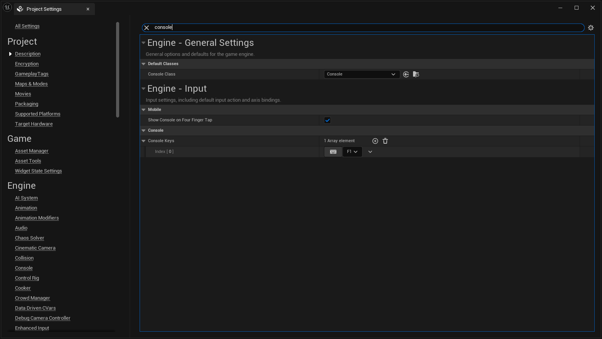
But rebinding it once for every project and every Unreal game on your machine is better. See Quality of Life.
UFUNCTION specifiers that remove plumbing
Since this chapter is about not doing unnecessary work, three specifiers that remove it. They do not speed up your build; they delete work from every call site forever, which adds up to more.
// A bool return becomes true/false execution pins, instead of every caller
// wiring a Branch node immediately after the call.
UFUNCTION(BlueprintCallable, meta=(ExpandBoolAsExecs="ReturnValue"))
bool TryConsumeAmmo(int32 Amount);
// The Target pin defaults to self, instead of every caller dragging in a self node.
UFUNCTION(BlueprintCallable, meta=(DefaultToSelf="Target"))
static void ApplyPatrolDebugTint(AActor* Target);
And on a property, BlueprintGetter / BlueprintSetter route Blueprint's get and set nodes through
your own C++ accessors:
UPROPERTY(BlueprintGetter=GetHealth, BlueprintSetter=SetHealth)
float Health;
This one is quietly powerful. Every Blueprint graph that already reads or writes that variable keeps working unchanged, but now goes through your function, so you can add clamping, invalidation or a change notification to a variable that is already used in fifty places, without touching any of them.
Build speed
Finally, the compile itself. Two things affect it:
BuildConfiguration.xml, at%APPDATA%\Unreal Engine\UnrealBuildTool\, holds UnrealBuildTool's machine-wide defaults, includingbUseUnityBuild, which controls whether source files are concatenated into larger translation units before compiling. Unity builds make full builds much faster and single-file rebuilds somewhat slower, which is a trade that can go either way depending on how you work.- Unreal Build Accelerator (UBA) distributes compilation.
bAllowUBALocalExecutoruses the cores you have more aggressively;bAllowUBAExecutordistributes across a Horde cluster if your studio runs one. (An olderbAllowUBAflag exists in material you may find online and is no longer wired up to executor selection, another case where reading the current source beats reading an old blog post.)
Which tool for which change
| You changed | Use |
|---|---|
| A function body, a constant, a log line | Live Coding (Ctrl+Alt+F11) |
Added a UPROPERTY or a new function | Live Coding; reinstancing handles it, but restart if it gets strange |
| A header that most of the project includes | Full rebuild; Live Coding has nothing small to patch |
.Build.cs / .Target.cs | Full rebuild, because these are build system inputs, not code |
| Nothing, but you need the game in a different state | The console: ke, an Exec function, or -ExecCmds |
| Nothing, but you need to be back at a specific spot | BugItGo |
The next chapter, Testing the Setup, puts the baseline loop into practice.
Testing the setup
Tools are only worth having if they work, otherwise this entire document is kind of useless. So here is a practical example to check ours with: introducing a new AActor instance. We'll attach a UBillboardComponent to it and initialize a property to a predefined value for demonstration purposes.
Adding the Actor
- Add a new Public header file called MyActor.h to your Module
- Use the snippet uca to autocomplete this file
- Add a new component property for our
UBillboardComponent- Use upc snippet
- Add a new editable property, so we can tweak a value
- Use upe snippet
- Override
BeginPlay - Declare a constructor
- Use ufc snippet
When complete our header file should look like this:
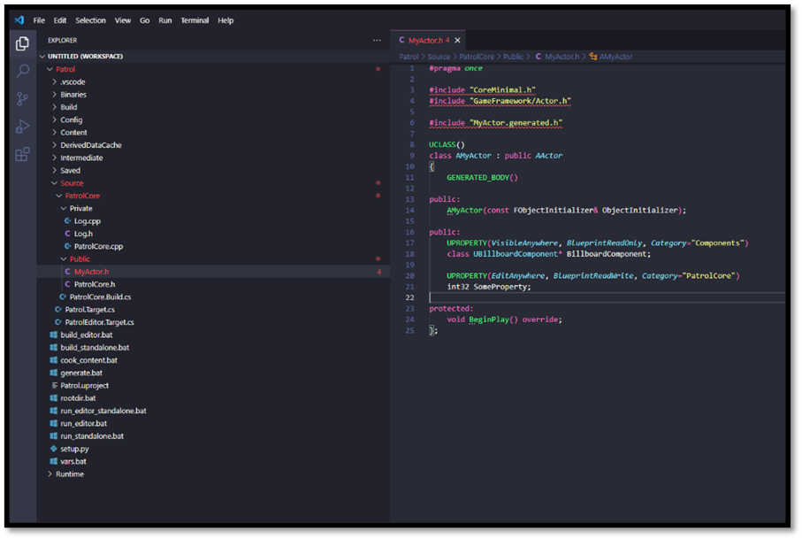
- Add a new Private source file called MyActor.cpp to your module
- Create the constructor
- Create the
BeginPlayfunction - Include required files
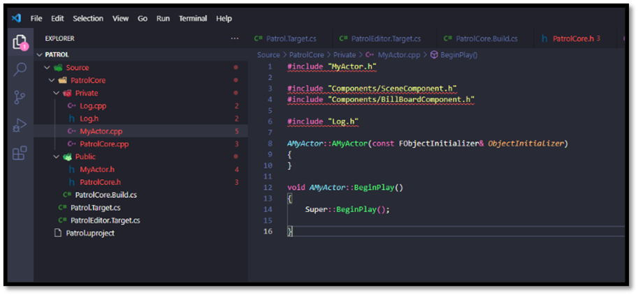
Note: the constructor below uses FObjectInitializer to create its components. That still works and
is worth recognising, but the form you will see far more often in engine code and in Epic's templates
is CreateDefaultSubobject<T>(TEXT("Name")), which does the same job without taking the initializer
explicitly. Either is fine; do not be surprised when the two appear side by side in the same
codebase.
- Use the
FObjectInitializerto create a rootUSceneComponent - Use the
FObjectInitializerto create aUBillboardComponent - Attach the
UBillboardComponentto the rootUSceneComponent - Assign a default value to the editable property
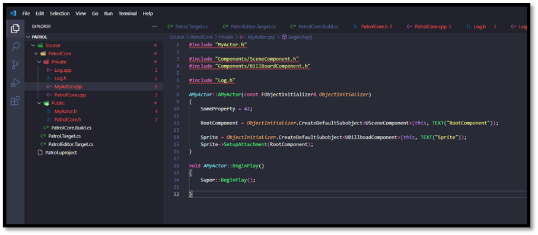
- Include the modules
Log.hfile - In
BeginPlayuse the snippet ull to add a log line - Log the name of the
AActorand the integer value of the property we created
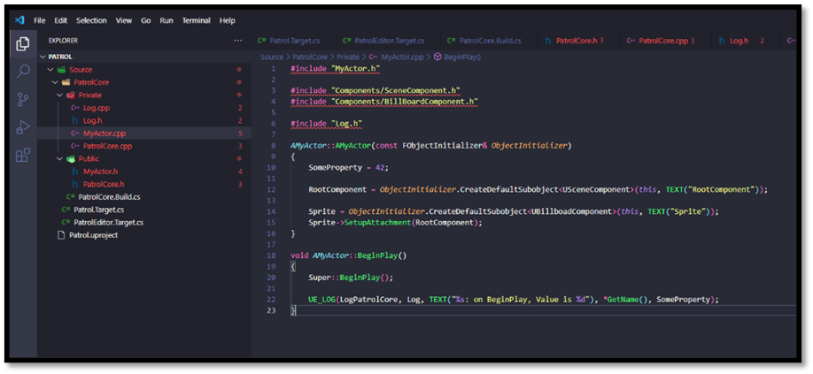
The iteration loop
Every change you make to C++ has to travel the same road before you can see whether it worked: compile, link, load the editor, get into play mode, reach the thing you changed. If that road is thirty seconds long you will experiment freely. If it is five minutes long you will start guessing instead of checking, and guessing is where bugs come from.
So the loop below is deliberately the slow, always-correct one: a full rebuild and a fresh editor. It is the baseline: it works for every kind of change, including the ones that reshape classes. Once you trust it, the Iteration Speed chapter shows you how to cut most of it away with Live Coding and how to drive code from the console without restarting anything.
Our development iteration loop looks as follows:
- Press CTRL + Tilde (~)
- Run
build_editor && run_editor - Check for any errors
- If and only if there are errors
- Fix compiler errors
- Press CTRL + Tilde (~)
- Press up arrow in the terminal
- Press enter
- If and only if there are errors
- Rinse and repeat
Note: once the editor is open and you are only changing the body of a function, you usually do not
need to run this loop at all. Ctrl+Alt+F11 recompiles and patches the running editor in place.
See Iteration Speed for when that is safe and when it is not.
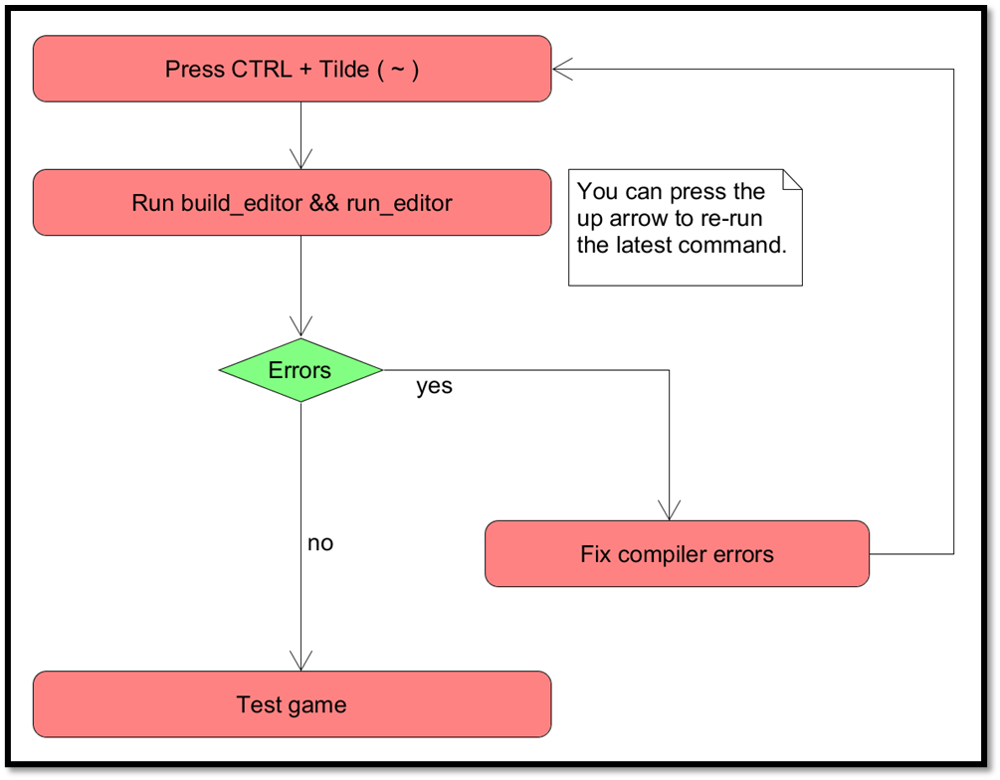
Testing our code
To ensure the effectiveness of our code, we should test it. We'll accomplish this by opening the Editor and placing an instance of our AActor within the scene. This step allows us to validate the functionality of our AActor implementation in a real-world environment.
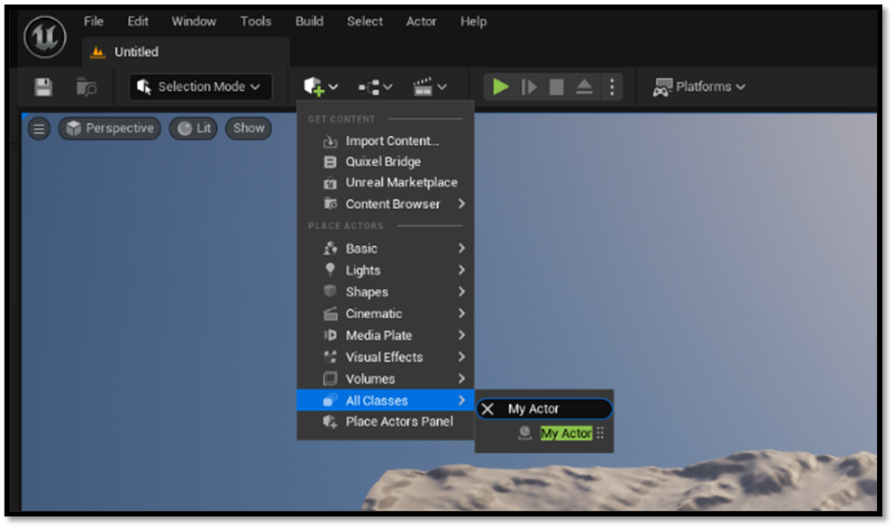
Once the AActor is positioned within the scene, adjustments to its predefined properties can be made. Subsequently, initiating gameplay by pressing the play button enables close monitoring of the output window. Here, a logging functionality has been integrated within the code to present information regarding the AActor, encompassing its name and the property value.
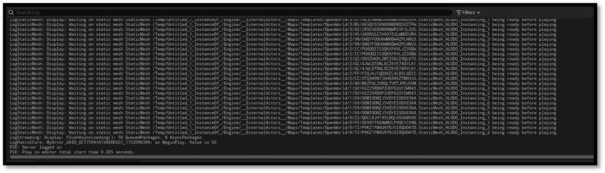
To conclude ...
Conclusion
That's the round trip. A project created from a text file, configured with C# build rules, compiled from the command line, cooked, and run as a standalone game, with no solution file involved at any point.
Along the way you saw what each piece does: the .uproject file that makes a folder a project, the .Target.cs and .Build.cs files that tell UnrealBuildTool what to compile, the primary module that gives the engine an entry point, and the batch files that turn six long commands into two short ones. If a build breaks now, you know which of those to go and look at.
Happy coding!
Where to go from here:
- Programming in Unreal and Engine Overview: the vocabulary, conventions and folder layout you'll run into as soon as you write real code.
- The Gameplay Framework: which class does which job when you press Play, and therefore where your gameplay code belongs.
- The Asset Manager: controlling what is loaded, when, and what ships.
- Iteration Speed: Live Coding, driving your own code from the console, and the other things that shorten the gap between writing a line and seeing it run.
- Profiling: how to find out why something is slow instead of guessing, using Unreal Insights and the GPU capture tools.
- For Designers and Artists: the same project structure this book just built, seen from the Content Browser side. Worth sending to the people you work with.
PS: I've also added some additional workflow tools that I had no idea where to put, in the appendix section, or you could just click here.
Programming in Unreal
The first half of this book is about how an Unreal project is put together. This chapter is about the code that goes inside it. It covers the things that trip up programmers in their first weeks with the engine: the vocabulary, the conventions, and the parts of C++ that Unreal has quietly replaced with its own.
The structure of this chapter, and much of its framing, follows Gerke Max Preussner's talk Programming in UE4, which Epic gave at a number of conferences. It has aged well. The details below have been updated for 5.8.
Programming is awesome, and it sucks
It's worth saying out loud once. Programming is awesome because you make something out of nothing and it moves. It also sucks: the tools are imperfect, every codebase of any size is partly bad, there's never enough time to do it right, and you are always behind. Peter Welch's essay Programming Sucks is the most accurate description of working in a programming team that exists, and Epic's team is no exception.
Unreal is several million lines of that. You won't understand it all, and nobody on the team does either. What helps is knowing your tools, reading other people's code, following the coding guidelines, and asking the people around you. The rest of this chapter is meant to get you past the first wall.
Common blockers
Visual Studio does not compile your code
The solution file is a convenience. Compilation is driven by UnrealBuildTool (UBT), which reads
the .Target.cs and .Build.cs files you wrote in
Creating an Unreal Project, runs UnrealHeaderTool
(UHT) over your headers to generate reflection code, and then calls the platform compiler itself.
Visual Studio and Xcode project files are generated from that setup so that an IDE has something
to open. If you have followed this book from the start, you have already seen this for yourself:
you have been building without a solution file the whole time.
Acronym soup
You will meet these constantly, often without explanation:
| Acronym | Meaning |
|---|---|
| UBT | UnrealBuildTool: builds C++ targets |
| UHT | UnrealHeaderTool: parses UCLASS/UPROPERTY markup and generates the glue code |
| UAT | UnrealAutomationTool: scripts larger jobs such as build, cook, stage and package (RunUAT.bat) |
| DDC | Derived Data Cache: cached, platform-ready versions of your assets |
| CDO | Class Default Object: the one instance per UCLASS that holds its default values |
| BP | Blueprint |
| PIE | Play In Editor |
| INI | The text configuration files in Config/ |
Then there are the code names. Tools tend to keep whatever name the programmer who started them
chose, and those names end up in class names, module names and console variables. Niagara is
the particle system, replacing Cascade. Persona is the animation editor. PhAT is the
Physics Asset Tool. Kismet was Unreal 3's visual scripting, and it survives in names like
UKismetMathLibrary, the class behind most Blueprint math nodes. Lumen is runtime global
illumination; Lightmass is the older baked version. Sequencer is the cinematics tool.
Cooking turns editor assets into the platform-specific form a packaged game loads
(Running a Game covers it).
Where is main()?
It is in Engine/Source/Runtime/Launch/Private/Launch.cpp, which calls into
LaunchEngineLoop.cpp next to it. If you have written your own engine, it's tempting to start
there to find out "how it all works". Don't start there. There are a couple of million lines between that loop and
the code you will write day to day, and none of it will make sense until you know what the layers
above it are for. Learn the Gameplay Framework first, then come back
here when you have a specific question.
Unrealisms
Type prefixes
Every type name in Unreal carries a prefix, and UHT enforces some of them:
| Prefix | Used for | Examples |
|---|---|---|
U | Classes deriving from UObject | UTexture2D, UActorComponent |
A | Classes deriving from AActor | APawn, AGameModeBase |
F | Every other class or struct | FVector, FName, FString |
T | Templates | TArray, TMap, TObjectPtr |
I | Interfaces | IConsoleManager |
E | Enums | ECollisionChannel |
b | Boolean variables | bHidden, bCanEverTick |
The story goes that Tim Sweeney used F for floating-point vector types and U for Unreal classes
early on, and everyone who joined later assumed it was a rule. Now it is one. Everything is
PascalCase too: functions, parameters, locals, loop counters. It will bother you for a week. Go
along with it anyway, because consistency with the code around you is worth more than your
personal preference.
UObjects: what C++ does not give you
C++ has no runtime reflection, no garbage collection and no automatic serialization. Unreal wants all three, so it builds them on top of C++. You mark up your types with macros:
UCLASS()on classesUSTRUCT()on structsUENUM()on enumsUPROPERTY()on member variablesUFUNCTION()on member functions
UHT reads the markup and generates the code that registers each type with the reflection system:
USTRUCT(BlueprintType)
struct FWeaponStats
{
GENERATED_BODY()
UPROPERTY(EditAnywhere, BlueprintReadOnly)
float Damage = 10.0f;
UPROPERTY(EditAnywhere, BlueprintReadOnly)
int32 MagazineSize = 30;
};
That markup gets you a lot. The Details panel can show and edit these fields. Blueprints can read
them. They are saved to disk and restored when loaded, and they can be replicated over the network.
And a UPROPERTY that points to another UObject is a reference the garbage collector can see.
That last one matters most. A UObject* member without UPROPERTY is invisible to the collector,
and one of the most common beginner crashes is an object being garbage collected while a raw
pointer to it is still in use. In UE5, prefer TObjectPtr<T> for UObject member pointers.
UObjects and Garbage Collection shows what the collector is doing in a
running game.
Basic types and containers
Unreal does not use int, long or char directly. Engine/Source/Runtime/Core/Public/GenericPlatform/GenericPlatform.h
defines fixed-size types (int32, uint8, int64, TCHAR, ANSICHAR) so that sizes stay the
same on every platform. Their limits are in Math/NumericLimits.h. Since 5.0, FVector,
FVector2D and friends store doubles for large world coordinates (look up the using aliases
in Math/MathFwd.h), so don't assume a vector is three floats.
The Core module has its own containers, and engine code uses them instead of the standard library:
| Unreal | Closest std:: equivalent |
|---|---|
TArray | std::vector |
TMap | std::unordered_map |
TSet | std::unordered_set |
TSparseArray | none; an array with stable indices across removals |
TQueue | a lock-free FIFO queue |
TLinkedList, TDoubleLinkedList | std::list |
It also has delegates (unicast, multicast and dynamic, the last of which Blueprints can bind to), along with thread-safe variants.
Smart pointers
For ordinary C++ objects (not UObjects), Core provides TSharedPtr, TSharedRef, TWeakPtr and
TUniquePtr. They are close to their std:: equivalents, and you can choose thread-safe reference
counting. For UObjects you use TObjectPtr (a strong reference the GC tracks, as a
UPROPERTY), TWeakObjectPtr (doesn't keep the object alive, and becomes null when it's collected)
and TSoftObjectPtr (a path to an asset that may not be loaded yet, covered in
Asset Manager). Never put a UObject in a TSharedPtr. The garbage
collector owns its lifetime.
Older material mentions TAutoPtr and TScopedPointer. Both have since been removed; use
TUniquePtr.
Three string types
| Type | What it is | Use it for |
|---|---|---|
FString | A mutable, heap-allocated string | Building and manipulating text, logging |
FName | An index into a global name table; cheap to copy and compare | Identifiers: asset names, bone names, tags, anything compared often |
FText | Localizable text | Anything a player reads |
Literals need a macro. TEXT("Hello") makes a TCHAR literal. For localized text, define
LOCTEXT_NAMESPACE at the top of the file and use LOCTEXT("Key", "Hello"), or give the namespace
inline with NSLOCTEXT("Namespace", "Key", "Hello"). The definitions are in
Internationalization/Internationalization.h.
FName is case-insensitive (see the comment above class FName in UObject/NameTypes.h).
It keeps the casing it was first created with, but Blast and bLast are the same name. Since
reflected properties are identified by FName, you cannot have both as UPROPERTYs on one class.
Macros for everything else
- Logging:
UE_LOG(LogCategory, Verbosity, TEXT("..."), ...). You declared a category in Setup an Unreal Project. - Assertions:
check(expr)halts in Debug and Development builds and compiles out of Test and Shipping, andcheckSlow(expr)only runs in Debug.ensure(expr)logs a callstack the first time it fails and then carries on, so use it for "this should not happen, but the game can survive it". The macros are inMisc/AssertionMacros.h, andMisc/Build.hcontrols which configuration enables which. - Localization:
LOCTEXT_NAMESPACE,LOCTEXTandNSLOCTEXT, as above. - Slate (the editor's UI framework):
SLATE_BEGIN_ARGS,SLATE_ATTRIBUTEand friends. You will read these long before you ever write one.
Best practices
Follow the Epic C++ Coding Standard. Code written by thousands of people over decades isn't perfectly consistent. When the standard and the file in front of you disagree, match the file.
Names are the hard part. Pick names that are descriptive but as short as possible, and that goes for local and loop variables too. Don't invent acronyms of your own; the engine has enough.
The general principles still apply. Keep it simple (KISS) and don't build what you don't need
yet (YAGNI). Prefer composition to inheritance, which Unreal's component model already pushes you
towards. Keep modules loosely coupled, and prefer many small, trivial pieces over a few clever
ones. From SOLID, single responsibility, open/closed, Liskov substitution and interface segregation
all carry over well. Dependency injection is clumsy in C++, and Unreal mostly doesn't use it.
Instead it uses the Hollywood principle ("don't call us, we'll call you"): the engine calls your
BeginPlay, Tick and StartupModule, not the other way round. The Gang of Four's Design
Patterns is worth reading if you haven't yet. Unreal also has an automation and unit-test
framework if you want to work test-first.
Where to learn more
- Epic Developer Community: the official documentation, tutorials and courses.
- Unreal Engine forums and the Unreal Source Discord community.
- Alex Forsythe and Mathew Wadstein on YouTube. Forsythe's videos on the gameplay framework and the build process are some of the best explanations anywhere. Wadstein has a short video on almost every Blueprint node.
- The engine source on your disk, which is always correct for your version. See Additional Workflow Items.
Engine Overview
The earlier chapters built a project one file at a time. This chapter steps back and looks at what surrounds it: where the engine comes from, how its folders are laid out, how configuration is layered, and which of the tools that ship with it are worth knowing on day one.
Unreal is large: thousands of directories, hundreds of modules, and over twenty-five years of code from hundreds of people. Nobody knows all of it. The good news is that it is organised the same way from top to bottom, so once you can read one part of the structure you can read the rest.
Parts of this chapter follow Gerke Max Preussner's talk A Programmer's Glimpse at UE4, updated for 5.8.
Getting the engine
There are two ways to get the engine, and the book so far has assumed the first.
The Epic Games Launcher installs a prebuilt, binary engine. It is ready to use straight away,
and it includes the editor debug symbols if you tick them in the install options. You should,
because without them a callstack into engine code is just addresses. A launcher engine identifies
itself by version number, so the EngineAssociation in your .uproject reads "5.8"
(Creating an Unreal Project goes through that file).
The full source from GitHub comes from Epic's UnrealEngine repository, which you can access
once your GitHub account is linked to your Epic account. You build the engine yourself, which takes
a while the first time, and in return you can change it. Two pieces of advice come with that:
- Change the engine only as a last resort. Most things you think need an engine change can be done in a project module or a plugin. Every engine change is one more thing you have to merge again whenever you take a new Unreal release.
- Make an Installed Build if a team shares a source engine. An installed build is a prebuilt
package made from your source tree with UnrealAutomationTool's
BuildGraph. It behaves like a launcher engine, so artists don't need to compile anything. A custom engine registers itself underHKEY_CURRENT_USER\SOFTWARE\Epic Games\Unreal Engine\Buildswith a generated ID, and that ID replaces the version number inEngineAssociation. If the project sits in a folder under the engine's root directory, UnrealVersionSelector finds the engine without needing the registry at all.
Either way you get the engine source. Even with a launcher install, {UE-Root}/Engine/Source is
right there on your disk, and it's the most accurate documentation you have. The book keeps coming
back to that, and Additional Workflow Items explains how to make
it searchable.
Folder structure
The engine and a project are laid out almost the same way. A project is essentially an extension of the engine, not a separate thing it opens, so the same folder names mean the same things in both:
| Folder | Holds | Put in version control? |
|---|---|---|
Source/ | C++ code, with a .Target.cs per target and a .Build.cs per module | Yes |
Content/ | Assets (.uasset, .umap) | Yes |
Config/ | .ini settings | Yes |
Plugins/ | Plugins that belong to this project, each laid out like a mini project | Yes |
Binaries/ | Compiled DLLs, executables and .pdb symbols | Usually no; see below |
Intermediate/ | Build products, generated headers, project files | No |
Saved/ | Logs, crash dumps, autosaves, local config, cooked output | No |
DerivedDataCache/ | Cached, platform-ready asset data | No |
{projectname}.uproject | Defines the project itself | Yes |
You saw most of these appear on disk in Build an Unreal Project and Open an Unreal Project. A few deserve more detail.
Content/ is managed from the Content Browser, not from Windows Explorer. Assets refer to each
other by path. If you move a file in Explorer, every reference to it breaks. If you move it in the
Content Browser, the editor updates the referencers and leaves a redirector behind so nothing
breaks. It also checks out everything it touched in source control. The one time you should go into
Content/ from the file system is to recover an autosave (below).
Saved/ is where you go when something went wrong. Saved/Logs/ keeps the logs of previous
sessions, so you can read what happened after the editor has already closed. Saved/Crashes/ gets a
folder for every crash, containing the log up to that moment and a minidump (.dmp). Open the dump
in Visual Studio with the matching symbols and you get the callstack and local variables at the
moment of the crash. Saved/Autosaves/ mirrors the layout of Content/. If the editor crashed and
took your work with it, compare timestamps, and if the autosave is newer, copy it over the
original.
Intermediate/ can always be deleted. Everything in it is regenerated. When a build gets into a
state that makes no sense, deleting Intermediate/ (and the project's Binaries/) is the
standard first step.
Binaries/: teams where only programmers compile usually keep it out of source control and
share builds another way. Teams without a build machine sometimes commit the editor binaries so
that artists never need a compiler. Both approaches are valid. What matters is that the team
decides deliberately.
Your own folders. Nothing stops you from adding folders at the project root. A common one is
SourceAssets/ for the .psd, .fbx and .wav files that assets are imported from. Because
it sits in the project, the import path is the same on every machine, so reimport keeps working
for everyone.
Plugins
Engine plugins live under {UE-Root}/Engine/Plugins, and Fab/Marketplace plugins install there
too. Any project can enable them. Project plugins live in the project's own Plugins/ folder. Many
engine plugins are enabled by default. If you'd rather opt in to each one, set
DisableEnginePluginsByDefault in the .uproject (see the table in
Creating an Unreal Project).
Modules
You wrote a module yourself in Setup an Unreal Project.
The engine is built out of hundreds of them, sorted by where they are allowed to run.
{UE-Root}/Engine/Source has one folder per category:
| Folder | Used by |
|---|---|
Runtime/ | Games, the editor and programs. Anything that can end up in a shipped game |
Editor/ | The editor only |
Developer/ | The editor and tools, but never a shipped game |
Programs/ | Standalone tools such as UnrealBuildTool and UnrealHeaderTool |
ThirdParty/ | External libraries |
One dependency rule follows from that: a runtime module must not depend on an editor or developer
module, because that code doesn't exist in a shipped game. Your own modules follow the same rule,
and the Type field of each module entry in the .uproject (Runtime, Editor, ...) is how you
declare which kind a module is.
When you're starting out, four modules cover nearly everything. Core has the fundamental types
and containers (Programming in Unreal). CoreUObject is the
UObject system: reflection, garbage collection and serialization. Engine has actors,
components, worlds and the Gameplay Framework. Slate and UMG
are the UI. Later you'll find UnrealEd (the editor itself), AssetRegistry, Json and
JsonUtilities, DeveloperSettings (for adding your own Project Settings page) and
TargetPlatform. Editor modules are the best example code for writing your own tools.
Modules still compile to one DLL each for the editor. A packaged game links them all into a single monolithic executable, which you saw happen in Running a Game.
On the C++ version: Unreal hasn't been "C with classes" for a long time. 5.8 requires C++20.
C++17 is marked obsolete and no longer compiles (see CppStandardVersion in
Engine/Source/Programs/UnrealBuildTool/System/CppCompileEnvironment.cs). You'll still find old
macros such as OVERRIDE in parts of the codebase that nobody has cleaned up yet. Write
override, nullptr and enum class in your own code.
Configuration
Behaviour that isn't in code or content lives in .ini files. There isn't just one of each: every
config type (Engine, Game, Input, Editor, ...) is a stack of files. Each file overrides
the ones before it, and the final result is loaded into class defaults at startup. The order for 5.8
is defined by GConfigLayers in Engine/Source/Runtime/Core/Public/Misc/ConfigHierarchy.h,
and its core is:
{UE-Root}/Engine/Config/Base{TYPE}.ini: engine defaults. Read these, never edit them.{UE-Root}/Engine/Config/{PLATFORM}/Base{PLATFORM}{TYPE}.ini: engine per-platform defaults.{project}/Config/Default{TYPE}.ini: your project's settings. This is where Project Settings writes.{UE-Root}/Engine/Config/{PLATFORM}/{PLATFORM}{TYPE}.ini, then{project}/Config/{PLATFORM}/{PLATFORM}{TYPE}.ini: per-platform overrides, e.g.Config/Windows/WindowsEngine.ini.- User-level files, and finally
Saved/Config/: local overrides for this machine only. The editor saves per-user state here, and it never goes into source control.
When a setting "doesn't stick", it's almost always because a later layer overrides it. Reading the
Base files is also the best way to find out which settings and console variables exist. Browse
them. You'll find things you didn't know you could change.
A section named [/Script/ModuleName.ClassName] sets the defaults of that class's UPROPERTY(Config)
properties. Any class can read settings this way, not just engine classes:
UCLASS(Config = Game)
class UMyTuning : public UObject
{
GENERATED_BODY()
UPROPERTY(Config)
float SprintMultiplier = 1.5f;
};
; Config/DefaultGame.ini
[/Script/MyProjectCore.MyTuning]
SprintMultiplier=1.75
Most day-to-day settings are exposed in Edit → Project Settings and Edit → Editor
Preferences, which write to these same files, so you won't often need to edit an .ini by hand.
Knowing where the value actually lives is what lets you diff it, review it and fix it when the UI
won't.
Tools worth knowing
These ship with the engine and are useful from your first week:
- Unreal Insights (Tools → Unreal Insights, or
{UE-Binaries}/UnrealInsights.exe) is the profiler: timing across all threads, memory, networking, asset loading. The Profiling section teaches how to read a capture. - Session Frontend (Tools → Session Frontend) connects to running game sessions (on this PC, on the network or on a devkit), streams their log and sends them console commands. The Device Manager next to it handles the target devices themselves.
- Reference Viewer and Size Map (right-click an asset) show what an asset pulls in and how much memory that costs. They also tell hard references, which always load together, apart from soft references, which load on demand. For Designers and Artists covers both in depth, and Asset Manager explains why the difference matters.
The Gameplay Framework
Every Unreal game, whether it's a shooter, a puzzle game or a walking simulator, runs on the same small set of classes. The engine spawns them in a fixed order when you press Play, and each one has one job: persistence, rules, shared state, per-player state, a body, a brain or a UI. That set of classes is the Gameplay Framework. Once you know which class does which job, you know where almost any piece of gameplay code belongs, and you can read most Unreal projects.
This chapter goes through the classes roughly in the order they come into existence, then puts them together. You can use every one from C++, Blueprint or both, and you can leave most of them at their defaults. The multiplayer parts are there if you need them and cost you nothing if you don't.
Epic's own introduction is the Introduction to the Gameplay Framework video on the Epic Developer Community, and Alex Forsythe's The Unreal Engine Game Framework: From int main() to BeginPlay follows the same path from the engine's side. Both are worth watching after reading this.
Game Instance: persistence
UGameInstance is created when the game starts and destroyed when it quits. It is not an actor,
it is not part of any level, and it survives every map change. That makes it the place for data
that must outlive a level: the player's profile, which save slot is loaded, progress across levels.
It is never replicated. The server and every client each have their own Game Instance, and they know nothing about each other.
The trap is that "survives everything" is convenient, so everything ends up in it, and six weeks later your Game Instance has three thousand lines and does twelve unrelated jobs. The fix is subsystems. Choose the base class by how long the system should live:
| Subsystem base | Lifetime |
|---|---|
UEngineSubsystem | As long as the engine runs, including in the editor |
UEditorSubsystem | As long as the editor runs |
UGameInstanceSubsystem | As long as the game runs; survives level changes |
UWorldSubsystem | Created and destroyed with each UWorld |
ULocalPlayerSubsystem | One per local player, which is what makes split-screen work |
The engine creates, initializes and destroys them for you. You override Initialize() and
Deinitialize(), and anything can find them:
USaveGameSubsystem* Saves = GetGameInstance()->GetSubsystem<USaveGameSubsystem>();
No singletons, no manual ownership, and no editing a shared class every time someone adds a system.
The base classes are in Engine/Source/Runtime/Engine/Public/Subsystems/.
Worlds and levels
Underneath the Game Instance sits the world: one UWorld per loaded map, made up of a persistent
ULevel plus any streamed-in levels, each holding AActors. Travelling to another map destroys the
UWorld, and everything in it goes with it: the Game Mode, Game State, Pawns and HUD are all
created again from scratch. Only the Game Instance and its subsystems carry on. (Seamless travel can
carry a Player Controller and Player State across in multiplayer, but don't design around it.)
Game Mode: the rules
AGameModeBase is the first actor spawned when a level loads, and it only exists on the
server. It holds the rules: who may join, where players spawn, what happens when someone scores,
when the match is over. On a client, GetWorld()->GetAuthGameMode() returns nullptr. That isn't
a bug. It's how the framework stops clients from deciding the rules.
There are two classes to choose from:
AGameModeBase: lightweight and generic. The right choice for single-player and most projects.AGameMode: a subclass for match-based multiplayer, with a built-in match state (waiting to start, in progress, finished) and the flow around it.
StartPlay() is called once at the start of play, before any actor's BeginPlay, which makes it
the place to set up global rules.
Default classes
The Game Mode decides which classes make up the rest of the framework:
| Property | What it spawns |
|---|---|
DefaultPawnClass | The player's body |
PlayerControllerClass | The brain driving that body |
GameStateClass | Shared, replicated match data |
PlayerStateClass | Per-player, replicated data |
HUDClass | The on-screen UI for each player |
SpectatorClass | The body used while not playing |
Switch Game Mode and all of those change with it. That's why a main menu level and a gameplay level usually have different Game Modes.
You set the project-wide default in Project Settings → Maps & Modes, and override it per level with World Settings → GameMode Override. The default classes are set in your Game Mode's constructor or Blueprint class defaults.
How a player gets a body
When a player joins, the Game Mode runs a chain of calls. Each step is virtual, so you can replace any one of them:
PostLogin: the player has joined, and their Player Controller exists.RestartPlayer: this controller needs a body.ChoosePlayerStart: pick anAPlayerStartin the level. This is where team spawns and spawn protection go.SpawnDefaultPawnFor: spawnDefaultPawnClassat that spot. This is where class selection goes.- The controller possesses the new pawn.
ChoosePlayerStart and SpawnDefaultPawnFor are BlueprintNativeEvents, so in C++ you override
their _Implementation versions. All of it runs on the server. The declarations are in
Engine/Source/Runtime/Engine/Classes/GameFramework/GameModeBase.h, and reading RestartPlayer
there is a good way to see the whole chain in one place.
Game State and Player State: shared data
The Game Mode decides the rules. The state actors hold the data those rules act on, and unlike the Game Mode, they replicate to every client.
AGameStateBaseholds data about the whole game that everyone needs to agree on: team scores, the match timer, shared objectives. It also keepsPlayerArray, the list of every player's Player State, which is what a scoreboard reads from.APlayerStateholds data about one player that other players can see: name, score, team, ping. It belongs to the player, not the body, so it survives the Pawn dying and respawning.
A typical flow for a player dying looks like this. The Pawn's health reaches zero. The Game Mode decides what that means and updates the Player State (one fewer life). If the result has to survive a level change, the Game Instance records it. Then the Game Mode restarts the level or returns to the menu.
Game-wide platform features such as achievements, presence and cloud saves go through the Online Subsystem, which abstracts Steam, Xbox and PlayStation services. Even a single-player game usually needs some of it.
Pawn: the body
An APawn is anything that can be possessed: a body in the world. Like any actor, it's mostly a
collection of components. The engine gives you two starting points:
ADefaultPawn: a sphere collision component, a static mesh and a simple flying movement component. Good for prototyping and for spectating.ACharacter: a capsule collision component, a skeletal mesh (so it can be animated) and theUCharacterMovementComponent, which handles walking, falling, swimming and flying, with network prediction built in. It's the usual base for a humanoid player.
Neither comes with a camera. Adding a UCameraComponent (usually on a USpringArmComponent for
third person) is up to you.
Collision
Every collidable component has an object type, which says what kind of thing it is (Pawn,
WorldStatic, PhysicsBody, ...). It also has a response to each collision channel: block,
overlap or ignore. Blocking produces hit events, and overlapping produces
begin/end overlap events. Traces (line traces and shape sweeps) query the same channels on
demand, for example Visibility for a line of sight or Camera for a spring arm. You can add
your own object types and trace channels in Project Settings → Collision, and presets bundle a
full set of responses under one name. Traces are powerful and cheap one at a time, but a few
thousand per frame is not cheap. Profiling Physics shows what that looks
like in a capture.
Movement
UCharacterMovementComponent is extremely capable, and it's also one of the most complex classes
in the engine. It assumes an upright humanoid with a fixed capsule, it does its own network
prediction outside the rest of the framework, and extending it usually takes a programmer. For
anything that isn't a person walking, look at the Mover plugin
({UE-Root}/Engine/Plugins/Experimental/Mover). Mover builds movement from small, swappable
movement modes with rollback-friendly networking. It's still marked experimental in 5.8 (check
IsExperimentalVersion in Mover.uplugin), so weigh that before building a shipping game on it.
Controller: the brain
An AController has no body. It possesses a Pawn and drives it. The Pawn is the body, and the
Controller is what decides what the body does. Usually one controller drives one pawn, though games
like RTSes spread one player's intent across many units.
APlayerControlleris the human player. It receives input, owns the camera manager and the HUD, and exists on the server and on the owning client only. Other clients never see your Player Controller.AAIControlleris an AI's brain. It runs behaviour trees and perception, and only exists on the server. Clients see the pawn it drives, never the controller.
The split matters as soon as something dies. In a deathmatch you die, the Game Mode spawns a new
Pawn, and the same controller possesses it. A score stored on the Pawn is gone. A score stored
on the controller survives. In multiplayer it belongs on the Player State, because that's the one
other players can see. AI controllers don't get a Player State by default. Set
bWantsPlayerState on the AAIController if your bots should show up on the scoreboard.
Possession
Possess(APawn*) takes control and UnPossess() lets go. OnPossess and OnUnPossess are the
hooks you override. For a pawn placed in the level, AutoPossessPlayer and AutoPossessAI decide
who takes it at start.
Getting into a vehicle is just possession: the controller un-possesses the character and possesses the tank. The same brain and the same player now drive a different body with different rules, and getting out reverses it. Possession happens on the server, and the controller-pawn link replicates.
The camera
Each Player Controller spawns an APlayerCameraManager, which decides what the player sees. It
looks through a view target, which is usually the possessed pawn but doesn't have to be. Death
cams, spectating, security cameras and cutscenes are all SetViewTargetWithBlend(), which moves the
view without changing possession. The camera manager also handles blends, camera shakes, fades and
post-processing. In short: possession decides what you drive, and the view target decides what you
see.
Input
Enhanced Input is the input system in UE5. It's a plugin, and it's enabled by default in new projects. The old Action and Axis mappings in Project Settings still work, but they are being phased out. Enhanced Input is built from three kinds of asset:
- Input Actions (
UInputAction): something the player can do, with a value type (bool, 1D, 2D or 3D axis). - Input Mapping Contexts (
UInputMappingContext): which keys trigger which actions. You can add and remove contexts at runtime, and they stack by priority. - Triggers (pressed, hold, tap, ...) and modifiers (dead zone, scale, negate, swizzle) that shape the raw input before your code sees it.
Mapping contexts belong to the local player: UEnhancedInputLocalPlayerSubsystem, a
ULocalPlayerSubsystem from earlier, is where you call AddMappingContext and
RemoveMappingContext. So split-screen players keep separate bindings. A typical setup adds the
gameplay context in BeginPlay, pushes a UI context at a higher priority when a menu opens, and
swaps in a vehicle context when entering a vehicle. The actions are bound in
SetupPlayerInputComponent, on either the pawn or the controller.
HUD: the UI
AHUD is the per-player UI owner. It exists only on the owning client and never replicates. In
practice, the UI itself is built with UMG widgets, and the HUD class, or the Player Controller,
is where they get created and added to the viewport. It gets its data by reading the state actors,
for example iterating GameState->PlayerArray to fill a scoreboard.
Putting it together
What happens when you press Play
- The engine starts and creates the Game Instance, which lives until you quit.
- The map loads: a
UWorldand its levels. - The Game Mode is spawned first, on the server only.
- The Game Mode spawns the Game State, which replicates to everyone.
- For each player that joins, a Player Controller and Player State are created.
- The Game Mode spawns a Pawn at a Player Start, and the controller possesses it.
BeginPlayruns on the actors in the world.
Who does what
- The Game Mode decides what should exist and what the rules are.
- The Game State and Player State hold what everyone has to agree on.
- The Controller decides what the player (or AI) wants.
- The Pawn does it in the world.
- The HUD shows it.
- The Game Instance remembers it after the level is gone.
Who exists where
| Class | Server | Owning client | Other clients |
|---|---|---|---|
UGameInstance | ✓ (own copy) | ✓ (own copy) | ✓ (own copy) |
AGameModeBase | ✓ | — | — |
AGameStateBase | ✓ | ✓ | ✓ |
APlayerController | ✓ | ✓ | — |
APlayerState | ✓ | ✓ | ✓ |
APawn / ACharacter | ✓ | ✓ | ✓ (if it replicates) |
AHUD | — | ✓ | — |
AAIController | ✓ | — | — |
Authority
In multiplayer, every replicated actor exists as several copies, and exactly one of them is in
charge. HasAuthority() asks "am I the copy that decides?" The server's copy has
ROLE_Authority and is the source of truth. The owning client's copy is an
ROLE_AutonomousProxy and predicts ahead so input feels immediate. Every other client's copy is
a ROLE_SimulatedProxy and only shows what it is told.
Rules of thumb:
- The server handles spawning, damage, scoring and possession.
- The client handles input, UI and cosmetic effects.
- To ask the server for something, send a server RPC. To tell clients something, use replication.
In single player you are always the authority, which is why code that ignores all this works perfectly until the day someone adds multiplayer.
Finding each other
Each piece can reach the others through the built-in accessors: GetGameInstance(),
GetWorld()->GetAuthGameMode(), GetWorld()->GetGameState(), GetPlayerState(),
GetController() and GetPawn(), plus the UGameplayStatics equivalents for Blueprint. Beyond
that, it's up to you: cast to your own subclass, go through an interface, or bind a delegate.
Interfaces and delegates keep the classes decoupled. Casting is simpler, and fine within one module.
The Asset Manager
Every asset in a game raises three questions:
- What is it? How does code refer to it without hard-coding a file path?
- When is it in memory? Who loads it, when, and what keeps it alive?
- Does it ship, and where? Is it cooked into the build, and in which package file?
For a small game the answers take care of themselves. Everything references everything, it all loads at startup, and it all ships. As a game grows, that stops working: load times climb, memory runs out, and the prototype level that "nobody uses" turns out to be in the shipped build. The Asset Manager is Unreal's answer to all three questions at once, and this chapter builds up to it one piece at a time.
The main source for this chapter is Ben Zeigler's Inside Unreal: Asset Manager Explained livestream. Zeigler wrote the system. Epic's Asset Management documentation and Tom Looman's Asset Manager for Data Assets & Async Loading are good follow-ups. One piece of advice from the livestream is worth repeating first: don't expect to get your asset setup right the first time. Everyone restructures it at least once.
The problem: hard references
A hard reference is a UPROPERTY that points straight at another asset, such as a
TObjectPtr<UStaticMesh> or a Blueprint variable of an object type. When the asset holding it
loads, everything it hard-references loads too, and everything those reference, and so on.
Referencing one weapon Blueprint from the player can pull in its mesh, its materials, their
textures, its sounds, its impact effects, and every other weapon those happen to reference.
For Designers and Artists shows how to
spot this in the Reference Viewer and Size Map.
A soft reference (TSoftObjectPtr<T>, TSoftClassPtr<T>, or FSoftObjectPath
underneath) stores only the path. Nothing loads until you ask for it. That fixes the cascade,
and it gives you a new job: now you have to load the asset at the right moment, asynchronously
so the game doesn't hitch, and keep it alive while it's in use. Making every reference soft doesn't
solve your memory problem. It hands you the loading problem instead.
In Blueprint the difference is the variable type. An object reference is hard, and a soft object reference is soft.
Loading a soft reference yourself
There are two ways to turn the path back into an object:
// Blocking: the game thread stalls until the asset is read from disk
USkeletalMesh* LoadedMesh = Mesh.LoadSynchronous();
// Asynchronous: ask, keep running, get a callback
FStreamableManager& Streamer = UAssetManager::GetStreamableManager();
MeshHandle = Streamer.RequestAsyncLoad(Mesh.ToSoftObjectPath(),
FStreamableDelegate::CreateUObject(this, &AHero::OnMeshLoaded));
LoadSynchronous is fine in editor tools and at boot, and it causes a visible hitch during
gameplay. The asynchronous version streams the asset in the background. Keep the returned
TSharedPtr<FStreamableHandle>: the handle is what keeps the loaded asset alive, and if you drop
it and nothing else references the asset, it can be garbage collected straight after loading. The
Blueprint equivalents are the Async Load Asset and Async Load Class Asset nodes.
Doing this by hand for five hundred items, with menus, levels and a server that all need different subsets, gets messy fast. The Asset Manager exists to do that bookkeeping for you.
The Asset Manager
UAssetManager is a single global UObject. The engine creates it at startup, in
UEngine::InitializeObjectReferences, from the class named in AssetManagerClassName in
DefaultEngine.ini. It lives until shutdown, so it survives every level and game mode change.
That's how it can hold on to loaded assets between levels. It isn't technically a subsystem, but
it behaves like an engine-lifetime one. It grew out of an older class, UObjectLibrary, which could
only find assets of one type.
You never create it. You ask for it:
// Anywhere in game code
UAssetManager& Manager = UAssetManager::Get();
// Code that can run before the engine is up: module startup, CDOs, commandlets
if (UAssetManager* EarlyManager = UAssetManager::GetIfInitialized())
{
// safe to use here
}
Get() returns a reference and stops with a fatal error if there is no Asset Manager, because
that means the project is misconfigured. GetIfInitialized() returns nullptr instead. It
replaces GetIfValid(), which has been deprecated since 5.3. Blueprint has no node that returns
the Asset Manager itself. You use the nodes that call it instead: Async Load Primary Asset,
Get Primary Asset Id List, Get Object from Primary Asset Id and Unload Primary Asset.
Packages
Before the Asset Manager can find anything, two building blocks need explaining: what an asset is on disk, and how Unreal knows about assets it hasn't loaded.
The storage unit is the package. One asset has three names, and they get mixed up constantly:
| Name | Example | Where you see it |
|---|---|---|
| Package name | /Game/Items/HealthPotion | The Content Browser. /Game is the Content/ folder |
| Object path | /Game/Items/HealthPotion.HealthPotion | What a soft reference stores (package, then object) |
| File on disk | Content/Items/HealthPotion.uasset | Explorer; levels are .umap |
In the editor a package is one file. It usually holds one main asset plus the sub-objects that belong to it. A Blueprint package, for example, holds the generated class and its default object. Material instances and textures aren't sub-objects: they are assets of their own, in packages of their own. (One package can hold several assets, in legacy content and from some importers, but one asset per package is the rule in UE5.)
Packages reference other packages. The potion uses a mesh, the mesh uses a material, and the
material uses a texture. That dependency graph is what the Reference Viewer draws and what the
cooker walks. When you cook, the editor-only data is stripped out and each package is split into
.uasset (the header), .uexp (the object data) and .ubulk (large data such as texture mips).
You'll never see those last two in your Content/ folder. They end up inside the container files
described under Cooking and chunking.
The Asset Registry: knowing without loading
The Asset Registry is an index of every package: its name, its asset name, its class, a set of
tags, and its dependencies. One entry is an FAssetData. The registry is built by reading package
headers, never by loading the objects. That's why the Content Browser can list fifty thousand
assets instantly, and it's the "discovering assets" progress bar you see the first time you open a
large project.
The tags are how you search it. The fixed fields are the package name, asset name and class path,
and on top of those every property you mark UPROPERTY(AssetRegistrySearchable), or that a class
adds by overriding GetAssetRegistryTags, is stored as a name/string pair. Tags are written when
the asset is saved, so after adding the specifier, re-save the existing assets. From then on you
can ask "every item where Rarity is Rare" without loading a single item:
#include "AssetRegistry/AssetRegistryModule.h"
IAssetRegistry& Registry = IAssetRegistry::GetChecked();
TArray<FAssetData> Items;
Registry.GetAssetsByClass(UItemData::StaticClass()->GetClassPathName(), Items);
for (const FAssetData& Item : Items)
{
FString Rarity;
Item.GetTagValue(TEXT("Rarity"), Rarity); // read from the index, nothing loaded
UE_LOG(LogTemp, Log, TEXT("%s is %s"), *Item.AssetName.ToString(), *Rarity);
}
GetAssetsByPath searches a folder, and GetAssets takes an FARFilter that combines class, path
and tag values. What comes back is only the index entry. Item.GetAsset() gets you the real object
but loads it synchronously. It's usually better to take Item.GetSoftObjectPath() and load that
asynchronously, or to let the Asset Manager do it. Blueprint has the same queries: Get Asset
Registry, then Get Assets By Class or Get Assets By Path.
Some notes for UE5:
- Use
AssetClassPathand class path names. The oldAssetClassfield was deprecated in 5.1. - In the editor, the registry fills in asynchronously. Query it too early and you get a partial
list. Check
IsLoadingAssets()and wait forOnFilesLoaded(). - A cooked copy,
AssetRegistry.bin, ships with the game. Runtime queries work, and in a packaged game the registry is loaded up front. - Projects can strip tags from cooked builds in the
[AssetRegistry]section of the engine config. If a query works in the editor and returns nothing in a build, check that first.
The API is in Engine/Source/Runtime/AssetRegistry/Public/AssetRegistry/IAssetRegistry.h.
The split to remember: the registry is the catalogue, and the Asset Manager is the librarian. The registry knows every asset that exists, loads nothing, and has no opinion about what matters. It's used engine-wide by the editor, the cooker and your code. The Asset Manager is specific to your game. You tell it which assets matter, it finds them in the registry, then loads them, unloads them and applies rules to them.
Primary and secondary assets
The Asset Manager divides assets into two kinds:
- Primary assets are the ones you ask for by name: an item definition, a hero, a map, a quest. The Asset Manager tracks them, loads them and unloads them.
- Secondary assets are everything else: meshes, textures, sounds, materials. They're never loaded directly. They load because a primary asset references them.
That split is what makes the system manageable. You deal with a few hundred primary assets, and the thousands of secondary assets follow from their references. It's also why rules you set on a primary asset, such as cook and chunk rules, spread to the secondary assets it pulls in.
Maps are primary assets out of the box, with the type Map. Anything else you opt into. Technically
any asset type can be scanned as primary, but if you want a texture to be independently loadable,
it's cleaner to wrap it in a data asset.
An asset is primary when both of these are true:
- Its class returns a valid ID from
GetPrimaryAssetId().UPrimaryDataAssetdoes this for you. A plainUDataAssetdoes not, and that's the most common reason an asset "isn't found". - Its type is listed in Primary Asset Types to Scan in the Asset Manager settings.
Primary Asset IDs
A Primary Asset ID (FPrimaryAssetId) is a type plus a name, written Type:Name, for example
Item:HealthPotion or Map:Arena01. Code, save games and data tables can refer to an asset by ID
instead of by path. IDs are small, they serialize, and they survive the asset being moved to
another folder. They don't survive it being renamed. For that you add a Primary Asset ID
redirect in the settings.
Because the name part is the asset's short name and not its path, two items can't both be called
HealthPotion, even in different folders. The Asset Manager warns about duplicates at startup. A
naming convention (DA_Item_HealthPotion, or a prefix per type) avoids the problem.
UPrimaryDataAsset works out its type from the class hierarchy. It's the first native class going
up from the asset, or the top-most Blueprint class (the rules are spelled out above the class in
Engine/Source/Runtime/Engine/Classes/Engine/DataAsset.h). It's clearer to state it outright:
UCLASS()
class UItemData : public UPrimaryDataAsset
{
GENERATED_BODY()
public:
virtual FPrimaryAssetId GetPrimaryAssetId() const override
{
return FPrimaryAssetId(TEXT("Item"), GetFName());
}
UPROPERTY(EditDefaultsOnly, AssetRegistrySearchable)
FName Rarity;
UPROPERTY(EditDefaultsOnly, meta = (AssetBundles = "UI"))
TSoftObjectPtr<UTexture2D> Icon;
UPROPERTY(EditDefaultsOnly, meta = (AssetBundles = "Gameplay"))
TSoftObjectPtr<UStaticMesh> WorldMesh;
};
Telling the Asset Manager what to scan
Project Settings → Game → Asset Manager lists the primary asset types to scan. Each entry gives
a type name that matches your GetPrimaryAssetId(), a base class, the directories to search, and
whether the type is Blueprint classes (Has Blueprint Classes on) or data asset instances
(off). Is Editor Only is for types that only tools use: they're never loaded at runtime or
cooked. Keep the directory list tight, because every scanned folder costs startup time, and
scanning all of /Game is expensive. The settings are saved to DefaultGame.ini, one line per
entry. Editing that file directly works, but needs an editor restart:
[/Script/Engine.AssetManagerSettings]
+PrimaryAssetTypesToScan=(PrimaryAssetType="Item",AssetBaseClass=/Script/MyProjectCore.ItemData,bHasBlueprintClasses=False,bIsEditorOnly=False,Directories=((Path="/Game/Data/Items")),Rules=(CookRule=AlwaysCook))
The engine's own entries (maps and labels) are in {UE-Root}/Engine/Config/BaseGame.ini. They're
worth reading as examples. If an asset isn't showing up, check these in order: the class returns
a valid ID, the type name matches exactly, the directory is being scanned, Has Blueprint
Classes is set correctly. Then run AssetManager.DumpTypeSummary in the console.
Loading by ID
A load by ID takes five steps. You ask with an ID, optionally naming bundles. The Asset Manager looks the ID up in the registry data to get the path and bundle lists. It starts an asynchronous load through its streamable manager while the game keeps running. Your delegate fires when everything is in memory. Then you fetch the object:
#include "Engine/AssetManager.h"
UAssetManager& Manager = UAssetManager::Get();
// One asset, with only its "Gameplay" bundle
const FPrimaryAssetId Id(TEXT("Item"), TEXT("HealthPotion"));
Manager.LoadPrimaryAsset(Id, { TEXT("Gameplay") },
FStreamableDelegate::CreateUObject(this, &AMyActor::OnItemLoaded, Id));
// Every asset of a type
TArray<FPrimaryAssetId> AllItems;
Manager.GetPrimaryAssetIdList(TEXT("Item"), AllItems);
Manager.LoadPrimaryAssets(AllItems, { TEXT("UI") });
Loading is asynchronous. The data streams in in the background, and your delegate runs on the game
thread once it's ready, so don't touch the object before then. If the asset is already loaded, the
delegate still fires, straight away. That way you write the same code for both cases. In the
callback, Manager.GetPrimaryAssetObject<UItemData>(Id) gives you the object. It returns nullptr
while the asset isn't loaded. LoadPrimaryAsset also returns a TSharedPtr<FStreamableHandle>. You
don't need to keep it, because the Asset Manager holds its own, but it's useful for progress
(GetProgress) or for cancelling.
Getting the list of IDs is free, because it comes from registry data. Loading is what costs, so
filter first where you can, for example on a registry tag via GetPrimaryAssetData.
LoadPrimaryAssetsWithType loads every asset of a type in one call. Think twice before using it on
a type with five hundred entries. In Blueprint, use Get Primary Asset Id List followed by Async
Load Primary Asset List.
The Asset Manager keeps what it loaded alive until you call UnloadPrimaryAsset(Id). That doesn't
free anything immediately. It releases the Asset Manager's hold, and the object goes at the next
garbage collection, as long as nothing else references it. If you load soft references yourself
instead, through FStreamableManager, keep the returned FStreamableHandle. Otherwise the asset
can be collected right after it loads. The Asset Manager doesn't replace garbage collection. It's
one more thing keeping objects alive, on top of ordinary references, which is convenient when you
want items to survive a level change and a leak when you forget to unload.
UObjects and Garbage Collection covers the collector itself.
The load functions are declared in Engine/Source/Runtime/Engine/Classes/Engine/AssetManager.h.
Asset bundles
An asset bundle is a named group of soft references inside one primary asset. In
UItemData above, the icon is in the UI bundle and the world mesh in the Gameplay bundle. The
inventory screen loads items with UI, and a pickup in the world loads with Gameplay. A hero
might add a Cinematics bundle with high-resolution textures that only load for cutscenes.
What ends up in memory is the primary asset itself, everything it hard-references, and the soft references in whichever bundles are active. Bundles combine, and you can switch them on assets that are already loaded:
// Character select: the hero data asset plus only its UI bundle
Manager.LoadPrimaryAsset(HeroId, { FName("UI") });
// Start of the match: add Gameplay, drop UI
Manager.ChangeBundleStateForPrimaryAssets({ HeroId }, { FName("Gameplay") }, { FName("UI") });
Ben Zeigler recommends switching bundles during loading screens, where a hitch doesn't matter. Bundles are also a common way to keep client-only content such as UI and cosmetics off a dedicated server.
Two things catch everyone:
- Bundles only filter soft references. A hard
TObjectPtrloads with the asset no matter which bundles you ask for. If "everything still loads", check for hard references first. - Bundle data is collected when the asset is saved. After adding
AssetBundlesmeta to a class, re-save its data assets.
(These are nothing like Unity's AssetBundles, which are downloadable archives. The closest Unreal equivalent to those is chunks, below.)
Rules, labels and collections
Primary asset rules
Rules (FPrimaryAssetRules) are set per type (the Rules of a Primary Asset Types to Scan
entry), per individual asset (the Primary Asset Rules list in the Asset Manager settings), or
through a label (below). With bApplyRecursively, which is on by default, they also apply to the
secondary assets a primary asset pulls in. There are three knobs:
- CookRule: whether the asset ships.
AlwaysCook,NeverCook,ProductionNeverCook(cooks in development builds if something references it, never in production), and a few variations.Unknown, the default, means "cook it if something references it". The full list, with comments, isEPrimaryAssetCookRuleinEngine/Source/Runtime/Engine/Classes/Engine/AssetManagerTypes.h.DevelopmentCookfrom older tutorials is now a legacy alias forProductionNeverCook. - ChunkId: which chunk the asset, and the secondary assets it pulls in, go into.
- Priority: not load order. When one secondary asset is referenced by several primary assets that have different rules, the higher priority's chunk and cook rule win. Epic's own example gives the main menu's label a very high priority, so that everything the menu uses ends up in chunk 0.
The Asset Audit window shows the rule that actually applies to each asset.
Primary asset labels
A Primary Asset Label (UPrimaryAssetLabel) is a primary asset with no gameplay data of its
own. It exists to apply rules to a group of other assets. You create one in the Content Browser
under Miscellaneous → Data Asset → PrimaryAssetLabel. It collects assets in three ways, which
you can combine:
- Label Assets In My Directory: everything in the label's folder and its subfolders.
- Explicit Assets and Explicit Blueprints: a list you pick by hand.
- Asset Collection: a Content Browser collection.
Its rules then apply to all of them, and to everything they reference. For example, label
/Game/Cinematics with ChunkId=2 and all cinematic content ships in its own chunk. Label
/Game/Prototype with NeverCook, and it is guaranteed never to ship. Labels are how most projects
assign chunks. The engine scans for labels everywhere under /Game by default, so you don't need
to register them. Is Runtime Label lets the label itself be loaded at runtime to load everything
it covers. It's off by default, because labels are normally a cook-time tool.
If a label points at a collection, make it a Shared collection (checked into source control), so that the build machine sees the same collection you do. Local and private collections only exist on your own machine.
Which grouping tool to use
| Asset Bundle | Primary Asset Label | Collection | |
|---|---|---|---|
| Scope | Inside one primary asset | Many assets, by folder or list | Hand-picked set of assets |
| Used for | Loading part of an asset at runtime | Cook and chunk rules in bulk | Organising in the Content Browser |
| Exists at runtime? | Yes | Only in its effect on the build | No, editor only (but a label can reference one) |
Cooking and chunking
Running a Game covers the mechanics of cooking. From the Asset Manager's side, the cooker starts from a set of seeds:
- the maps in Project Settings → Packaging → List of maps to include in a packaged build, or every map if that list is empty;
- the primary assets the Asset Manager adds, which are only those with
AlwaysCook(plus theDevelopmentAlways...rules in a development cook); - Additional Asset Directories to Cook in the same Packaging settings;
- anything still in memory when the Asset Manager finishes its initial loading.
It then follows every reference, soft ones too, and cooks whatever it reaches, subject to the
cook rules. A primary asset left on the default Unknown rule is therefore only cooked if something
references it. You can read the seeding in UAssetManager::ModifyCook in AssetManager.cpp.
Following soft references is why a prototype asset turns up in a shipped build: something
references it, even softly. Use the Reference Viewer to find what, then fix the reference or give
the asset a NeverCook or ProductionNeverCook rule. Project Settings → Game → Asset Manager →
Only Cook Production Assets turns any development-only asset that would be cooked into an error.
Cooked packages are bundled into container files for distribution. In UE5 that means IoStore
by default (bUseIoStore=True in {UE-Root}/Engine/Config/BaseGame.ini). Most of the data goes
into a .ucas file, with a .utoc table of contents, and a small .pak sits next to them for
loose files.
Chunking splits those containers into several numbered sets. By default everything goes into
chunk 0. Chunk IDs from rules and labels only take effect when Project Settings → Packaging →
Generate Chunks is on (bGenerateChunks, False in BaseGame.ini). Each chunk then becomes its
own set of files: pakchunk0-Windows.pak/.utoc/.ucas, pakchunk1-Windows..., and so on. Chunk
0 acts as the parent of the others, so anything already in chunk 0 isn't duplicated into another
chunk. More complex parent/child setups use ChunkDependencyInfo in the config. The
ChunkDownloader plugin ({UE-Root}/Engine/Plugins/Runtime/ChunkDownloader) builds optional
downloads on top of chunks.
Chunks are about files, not memory. Putting an asset in chunk 3 changes which download it ships in. It doesn't change when it loads or how much memory it uses. You need chunks for mobile download size limits, console streaming installs ("start playing at 30%"), DLC and language packs. A student project almost certainly doesn't need them. What matters is knowing they exist.
Advanced: overriding the Asset Manager
You can subclass UAssetManager and set it under Project Settings → Engine → General Settings →
Asset Manager Class Name (written to AssetManagerClassName in DefaultEngine.ini). Give your
subclass its own static Get() that casts GEngine->AssetManager, the way Lyra does.
StartInitialLoadingandFinishInitialLoadinglet you load game-wide data at startup. Keep in mind that anything in memory when initial loading finishes gets cooked.ModifyCookandModifyCookReferences(editor only) let you add packages to or remove them from a cook.GetPackageCookRule(editor only) decides the cook rule per package, for exampleNeverCookfor everything under/Game/Prototype/.
These signatures have changed between engine versions, so copy them from AssetManager.h rather
than from a tutorial. Lyra's ULyraAssetManager is a good real-world subclass to read.
Tools
"Don't expect anyone to do this correctly the first time," as Ben Zeigler puts it, so check the result with the tools:
- Reference Viewer (right-click an asset): who references what. You can toggle hard, soft and management references. Management references show which primary asset or label owns a secondary asset for chunking.
- Size Map (right-click an asset): the total size of an asset including everything it pulls in. Look for the one outlier that's ten times the rest.
- Asset Audit (Tools → Audit → Asset Audit): a sortable list with chunk IDs, cook rules and primary asset IDs. Switch it to a cooked platform to see cooked sizes, the best quick estimate of memory cost. It also exports to CSV.
All three are covered in more depth in For Designers and Artists.
- Console commands:
AssetManager.DumpTypeSummary: which types exist, and how many assets of each.AssetManager.DumpLoadedAssets: what the Asset Manager currently has loaded.AssetManager.DumpBundlesForAsset <Type:Name>: which bundles an asset has, and what's in them.AssetManager.DumpReferencersForPackage <path>: why a package is being pulled in.
Summary
| Term | In one line |
|---|---|
| Package | One asset on disk: a .uasset or .umap |
| Hard reference | Loads the target together with the referencer |
| Soft reference | A path; nothing loads until someone asks |
| Asset Registry | The index of every asset; never loads anything |
| Asset Manager | Finds, loads and applies rules to primary assets |
| Primary asset | An asset with an ID that you ask for by name |
| Primary Asset ID | Type:Name, e.g. Item:HealthPotion |
| Asset bundle | A named group of soft references inside one primary asset |
| Primary asset rules | CookRule, ChunkId, and Priority (resolves conflicts, not load order) |
| Primary asset label | A data-less primary asset that applies rules to a group |
| Chunk | Which shipped file set an asset goes in; not memory |
Good asset management isn't about loading less. It's about loading the right thing at the right time.
Profiling
Up to this point the book has been about making a project build and run. This section is about finding out why it is slow, which is a different skill, and one that is mostly about refusing to guess.
The material here comes from two talks by Epic's technical developer relations team, who profile other studios' games for a living. What makes them worth transcribing into a book is that they were not demonstrating on sample projects. They were handed two real, in-development games by studios who said outright that they had not started optimising yet, and worked through them in public. Every finding below has a cause, a measurement and a fix attached, which is the only form in which this kind of knowledge is actually useful.
The method
One sentence carries the whole section:
Never guess. Always investigate. What is slow, why is it slow, and how do you fix it.
The failure mode this guards against is not laziness, it is plausibility. Performance problems come
with a ready-made story ("it's probably the shadows", "it's the physics", "that mesh looks heavy"),
and the story is frequently wrong in a way that costs a week. In one of the captures below a gap in
the GPU timeline sat right next to something called OcclusionCullPipe, which made "it's occlusion"
almost irresistible. It was not occlusion. It was the profiling tools' own overhead.
Once you have a capture in front of you, the reading order is:
- Find the big number. Scroll into it. Find out why it is big.
- Find lots of little numbers. Five hundred things costing a microsecond each is also a big number, and it hides better.
- Find numbers where there shouldn't be any. Work happening for something off screen, a system running in a game that does not use that system. These are the cheapest wins in the whole exercise, because the correct cost is zero.
Then it is mechanical: click the tallest frame, find the cause, fix it, click the next one.
Profile on hardware that means something
A development workstation is not a console and is not a player's PC. This matters more now than it used to: the render thread was parallelised in 5.4 and RHI translation in 5.5, so Unreal scales across cores, and a machine with 64 of them will hide problems that a six-core machine will not. Half of the CPUs in the Steam hardware survey have six cores or fewer.
Options, roughly in order of preference:
- Real devkits: fixed hardware, consistent numbers, comparable between people.
- PC handhelds used as consoles: a Steam Deck or ROG Ally is a fixed, known, modest hardware target that you can buy without a publishing agreement. Several studios use them as a poor developer's devkit, and it works well.
- Deliberately different machines per developer: if everyone tests daily on different hardware you get broad coverage of GPUs, CPUs and drivers for free, at the cost of never having two comparable numbers.
-corelimit=14to make a workstation behave more like current-gen hardware. Not a substitute for the real thing, but it is one command-line flag.
Whatever you pick, the point is consistency. A number you cannot compare to last week's number is not a measurement.
Launch parameters
These all go on the command line of the build you are profiling. If the build was distributed through Steam, you do not need a special build to set them: right-click the game, Properties > General > Launch Options. (Distributing PC dev builds through a private Steam beta branch is a reasonable trick in general: you have already paid the fee, and you get the content delivery network.)
The one that matters
-trace=default,task
-trace turns on tracing to Unreal Insights. On its own, with no argument, it uses a default set of
channels and that is enough to start with. Everything else on this page is refinement.
A note on the default channel set: it has changed across releases, and Epic's own documentation
and their own conference talks currently disagree about what it contains. So this book is not going
to print a list. Check TraceAuxiliary.cpp in the engine source, or simply start a trace and look at
what the Insights front end reports. This is the first of several places in this section where the
source is faster and more trustworthy than documentation about the source.
The Insights front end is UnrealInsights.exe, in {UE-Binaries}. No shortcut is created for you;
make one. If it is already running when a traced game starts, it connects automatically and the
session shows up in its list.
Channels worth adding
task draws arrows showing which task a thread is blocked on, and what that task was waiting
for in turn. Without it, "waiting for task" is where profiling stops and guessing begins; with it you
follow the chain. It carries overhead, which is why it is not on by default, but by the time you are
taking a capture, something is usually already wrong, so pay it.
counters adds per-frame counters, and a surprising amount of value for one word:
- Platform memory: total and available physical for the system, used physical for the process.
- Primitive component count and draw calls after CPU culling, plus the GPU adapter name.
- Chaos solver body counts: kinematic, dynamic, total. The number of physics shapes actually active each frame, which the Physics page leans on heavily.
- Scene lights.
- UObject count: added in 5.8, by one of the speakers, in about two lines of code. A useful reminder that the profiler is engine code you are allowed to extend when it does not tell you what you need.
loadtime turns on the Loading track in the timing view (press L) and adds an Asset
Loading tab. It shows CPU-side package processing, not pak or IO Store reads, which is the right
thing to care about because the CPU-side work is where the extra processing happens. The Requests
table gives each load request's duration including everything it dragged in, and the package count.
That table is how you discover that opening a main menu loaded 8,300 packages.
stats forwards Unreal's whole stat system into Insights. Pure overhead if you do not need
it, but it carries video memory counters and navigation memory. Concretely: it is how one team found
100 MB going to navigation data in a game with no navigation.
Quality-of-life flags
-statnamedevents traces additional named events, so Insights shows you far more function
names. It is not free: measured at roughly 20% overhead on one of the games profiled. At that
cost it is the wrong flag for "are we hitting our frame budget?" and the right flag for
"why aren't we?"
The payoff looks like this. Without it, an animation Blueprint shows up as a 100-microsecond block: mildly annoying, maybe just what animation Blueprints cost. With it, that block resolves into 16 ray casts into the physics scene, per character, per frame, all of them tracing straight down at the ground and most of them redundant. That is not a performance mystery any more, it is a bug with an obvious fix.
-execcmds="stat unitgraph,stat fps" runs console commands after engine initialisation.
stat unitgraph gives a rolling graph of recent frame times in the corner, so you can see a hitch
happen instead of staring at a number; stat fps adds the frame rate.
-noverifygc. Development builds spend extra time verifying the garbage collector's
assumptions. That verification is useful, since it catches real mistakes in C++ code, but
it roughly doubles how long garbage collection takes, and every GC then shows up in your capture as a
hitch. You click it, you investigate it, and it turns out to be the verification. Turn it off when
you are measuring performance rather than correctness. It does not run in shipping builds anyway.
-dpcvars="gc.VerifyAssumptionsOnFullPurge=0" overrides console variables at launch.
This one deserves an explanation, because you would never guess its use from its name. dpcvars
stands for device profile cvars, and it is called that purely because the device profile team
happened to be the first group that needed a way to override cvars at startup. The name records who
asked for it, not what it does. What it actually does, and the reason to prefer it over
-execcmds for setting cvars, is run before engine initialisation, which means it can override
read-only cvars that -execcmds cannot touch.
That is a small thing, but it is a good illustration of a general rule about this engine: names frequently describe history rather than intent, and the way you find out what something really does is to read it.
-logcmds="log LogGarbage verbose" sets per-category log verbosity. LogGarbage at verbose
prints detailed timings for every phase of garbage collection and the UObject count, which is
otherwise awkward to get out of a running game.
Honest caveat: verbose logging costs real time, since the text has to be formatted, flushed and written, and can itself appear as hitches. But it appears in the profiler as logging, so it is visible rather than mysterious, which is the distinction that matters.
-handleensurepercent=0. An ensure() that fires does a stack walk and writes a dump, which can
take the better part of a second. Insights shows you none of that work; you just get an unexplained
hole in the timeline that no amount of scrolling explains. The default is 100 (handle all of them).
Set it to 0 when you are measuring performance rather than stability.
-attachpix is required, or PIX will not pick up the process.
When Insights is not enough
Unreal Insights is telemetry. It shows you what somebody instrumented. That is enormously valuable and also a hard limit: if the slow thing has no trace event around it, Insights will show you a gap and nothing else.
A sampling profiler takes the opposite approach. It needs only symbols for your executable, and it captures the entire C++ call stack thousands of times per second: everything, instrumented or not. When you have a hitch that Insights has no explanation for, this is the tool.
- Superluminal is paid, inexpensive, and very good.
- PIX for Windows is free, from Microsoft, and built for game developers.
- Platform vendors ship their own for consoles, mobile and XR.
Roughly double the overhead, and you can run one alongside Insights so you have both views of the same moment. Insights gained its own sampling profiler in 5.7.
Make it repeatable
A measurement you cannot reproduce is an anecdote. Three cheap habits:
BugIt/BugItGo, introduced in Iteration Speed.BugItputs a command on your clipboard that returns any player to your exact camera position and rotation. For profiling this is how you take the same capture twice.- Record your screen alongside the capture. OBS is free. With
stat unitgraphvisible you can line up a spike in the recording with a spike in the trace and see what was actually on screen when it happened. Insights can also embed screenshots directly into a trace. - Add a console command that jumps to a known point. If you profile the same cinematic or the same encounter repeatedly, spending twenty minutes on a command that skips straight there pays for itself within a day.
The rest of this section
- Reading a Capture: how to read Unreal Insights without bouncing off it, and what real findings look like.
- UObjects and Garbage Collection: object counts, GC cost, and how to find out what is keeping something alive.
- Physics: the default that costs almost every project time, and the tool that shows it to you.
- GPU: GPU captures, Nanite bins, shadows, translucency and foliage.
Reading a Capture
The first time most people open an Unreal Insights capture, they close it again. It is a wall of coloured bars with no obvious entry point. The speakers whose talks this section is drawn from call it "rainbow soup", which is fair.
It is not actually complicated. There are three panels that matter and one interaction that does most of the work.
The frames panel
Across the top is a row of vertical bars. Zoom in with the scroll wheel and they resolve into individual columns.
Each bar is one frame, not a fixed slice of time. This is the thing to internalise, because it is unlike every other timeline you have used. A bar can represent 16 milliseconds or several seconds; the height is the duration. A frame that took a minute produces a bar that shoots off the top.
There are horizontal reference lines:
- 16.66 ms is the budget for 60 frames per second.
- 33.3 ms is the budget for 30 frames per second.
Anything above your line is a dropped frame. Hold shift and scroll to zoom out and see the shape of a whole session; the spikes are where you start.
Game frames and rendering frames
Insights tracks both, and clicking a bar can select the rendering frame when you meant the game frame, which is why your selection sometimes looks slightly offset from what you expected. Press R to toggle, or right-click and turn rendering frames off entirely while you are working on CPU problems.
The timing view
Below is the timing view. Time runs left to right; depth is call nesting. FEngineLoop::Tick is at
the bottom and everything else is inside it.
Selecting a frame and walking down gets you from "this frame was slow" to "this frame was slow here" in a few clicks:
FEngineLoop::Tick
└─ WorldTick
├─ TickTime (PrePhysics and DuringPhysics work)
├─ BlueprintLatentActions
└─ GameThreadTickableTime
When you find EndPhysics mostly consisting of "wait for task", that is the game thread sitting idle
waiting for physics running on another thread. That is a signal to go look at
Physics rather than at anything in this list.
The one interaction to learn
Select a time range, then single-click a function. Insights reports how many times that function was called within the selection, along with inclusive and exclusive time.
This is the interaction that turns impressions into statements. "The physics looks busy" is not something a programmer can act on. "You are doing 500 ray casts into the physics scene in a single frame" is, because somebody can go and find out why, and there is usually an obvious answer.
Double-clicking a function highlights every other instance of it across the timeline, which is how you find out whether something is one expensive call or a hundred cheap ones spread out.
What real findings look like
Worked examples from the two games profiled in these talks. They are here for their shape, not their specifics. You will not have these exact bugs, but you will have bugs that look like them.
Work for things nobody can see. Character movement components were ticking for a large number of characters in a scene containing two. The rest were enemies from encounters later in the level, being simulated in advance. The fix was to not simulate them until they matter, and it was available because there was already a natural checkpoint where the tutorial ended.
Doing it for everyone instead of for the ones on screen. A SetGender call was running for every
character in the entire level rather than the two visible. This is the single most common shape of
performance bug in gameplay code, and it is invisible in the source: the function does not look
expensive, it is just being handed a much larger set than anyone intended.
Doing it twice. See UObjects and Garbage Collection for the best example of this: nine thousand packages loaded, garbage collected, and loaded again.
Blowing a time budget you did not know existed. UpdateLevelStreaming adds components to the
world incrementally, with a time budget of a few milliseconds per frame, so that streaming does not
hitch. One frame took 28 ms anyway, because the budget is only checked every few
components, so a single component that takes 26 milliseconds sails straight past it. In this case a
single instanced static mesh component was creating physics state for an enormous number of
instances.
Forcing async work to be synchronous. Skeletal mesh animation is normally evaluated on a worker thread. Certain operations, such as spawning an actor or changing animation, force it to be evaluated immediately instead, so that the result is visible in the same frame you asked for it. You usually do not need that immediacy, particularly during a fade or a transition, and it is a setting rather than a rewrite. If you hit this, search the engine source for where animation evaluation decides to run immediately; the flag is near it and the name changes between versions.
Using the wrong LOD because nobody said not to. MetaHuman LOD0 is built for virtual production and film work. For games, Epic's own recommendation is LOD1 at most, dropping aggressively from there, giving you fewer facial bones and much less evaluation. Characters occupying a two-hundred-and-fifty-sixth of the screen do not need the Hollywood head.
UI that is more expensive than it looks. Widget components redraw much like drawing a material to a render target, and 2,800 of them were ticking. There is an Automatic Tick Mode setting if you need many of them. Separately, the habit carried over from UE4 of putting a canvas panel at the root of every user widget costs layout work on every one of them, for no benefit in the common case.
Next
UObjects and Garbage Collection, the counting problem that sits behind a surprising number of hitches.
UObjects and Garbage Collection
Unreal manages the lifetime of anything deriving from UObject for you. Periodically it walks
everything reachable from a set of roots, works out what is no longer referenced, and destroys it.
That walk costs time proportional to how many objects exist. So the number of UObjects alive in
your game is not an abstract statistic. It is a direct input to how long your garbage collection
pauses are. This page is about finding out what that number is, what it should be, and what to do
when it is wrong.
One detail up front, because it explains a lot of hitches: when Unreal changes map it runs a full purge garbage collection. A full purge is not time-sliced. Normal incremental collection spreads its work across frames; a full purge does all of it at once, which is why the transition between levels is where GC cost shows up as a single visible stall.
Finding out what you have
obj list is the command, and it is one of the most useful in the engine.
obj list
By default it lists classes with their object counts and sizes, sorted by size. That is the right default when you are chasing memory. When you are chasing garbage collection time you care about count, not size:
obj list -countsort
Once a class looks suspicious, list its instances by full object name:
obj list class=OverlaySlot
And for feeding into anything else:
obj list -csv
obj list -all
In 5.8 there is also an object trace snapshot, which produces a dedicated Insights tab you can filter, sort and group rather than parsing console output.
Why won't this be collected?
The other essential command:
obj refs shortest name=/Game/UI/WBP_MainMenu.WBP_MainMenu_C
This prints the reference chains keeping that object alive, sorted shortest first. It is the
direct answer to "I destroyed this, why is it still here?", and it is the single best tool for
tracking down a leak, because a UObject leak in Unreal is almost never a missing delete, it is
something still holding a reference that nobody remembers adding.
This is the same question the Reference Viewer answers for content, from the other side. If you are working with designers or artists, For Designers and Artists describes the graphical version of this, and it is often easier to hand someone a picture than a console dump.
How many is too many?
These are the rules of thumb used by Epic's developer relations team when they look at a capture. They are experience, not policy, and they depend on your game and your target hardware, but they are far better than having no reference point at all.
| UObject count | Reaction |
|---|---|
| ~100,000 | Good. Genuinely impressive. |
| ~200,000 | Fine. You know what you are doing. |
| 300,000 to 700,000 | Not great, not terrible. Probably not your biggest problem. |
| ~1,000,000 | Something is structurally wrong. |
| ~2,000,000 | The engine stops. |
That last row is not a soft limit. The UObject table is preallocated, by default with room for
2,162,688 entries, and it is not grown at runtime. Run out and you get a fatal error:
Maximum number of UObjects (2162688) exceeded.
You can raise it, via gc.MaxObjectsInGame and gc.MaxObjectsInEditor under
[/Script/Engine.GarbageCollectionSettings]. Studios do. The advice from the people who get called
in afterwards is blunt and worth repeating: raising the limit is not a fix, it is switching off the
smoke alarm. If you are near two million objects, the collection pauses were already hurting long
before the crash. The limit is doing its job by telling you.
Reading garbage collection in the log
With -logcmds="log LogGarbage verbose" you get per-phase timings. The phases, and what a bad one
tells you:
- Reachability analysis is the graph walk. It scales with object count and with how deep the reference chains are. A surprisingly fast one usually means chains are terminating early, which is good news.
- Unhashing unreachable objects removes objects from the engine's lookup tables. Observed at
88 ms in one capture. Worth understanding rather than resenting: those hash tables are exactly what
makes things like
GetAllActorsOfClassfast. You pay on the way out for speed on the way in. - Purging is the actual destruction. Observed at 212 ms for 81,000 objects.
In a late-game save from one of the profiled games, collection cost roughly 30 ms of reachability analysis plus about 2.1 seconds of destruction spread across many frames. Spread out, yes, but still around 2 ms taken out of every frame's budget, continuously, for work that produced nothing.
The log also tells you how many objects were collected. In that same game about 40,000 objects were
being created and thrown away every minute, roughly 11 per second churning through allocation and
destruction. Once you know that, obj list tells you what class they are, and the question becomes
whether they need to be UObjects at all, or could be pooled and reused.
Worked example: reference hell
The chain, from an actual capture:
MainMenuContainer → GameMode_MainMenu → GameState_MainMenu → DA_UIGlobals → (most of the game)
A globals data asset, referenced by the game state, holding references to a large amount of content. Showing the main menu therefore pulled in 8,300 packages, around 2.5 GB, taking five seconds.
Nobody made a bad decision here. A globals data asset is a convenient, obvious thing to make. But because it is referenced by something that always loads, everything it touches always loads too.
The fix is not a heroic refactor: load those assets when you enter the game rather than when you show the menu. Total load time across both is unchanged, but the player reaches the main menu in a fraction of the time, and players who pick "Load Game" never pay for the rest at all.
Worked example: loading everything twice
This one is worth walking through slowly, because the cause is counter-intuitive and the symptom is enormous.
- The main menu loaded 11,000 packages.
- Loading into the game loaded 16,000 more.
- Of those 16,000, 9,000 had already been loaded while showing the main menu.
What happened: changing map runs a full purge. The previous map, the previous game state and everything only they referenced became unreachable, so garbage collection dutifully destroyed all of it. Then the new map loaded, needed the same 9,000 packages, and loaded them again.
So the project paid to load 9,000 packages, paid to garbage collect them, and paid to load them a second time. The purge alone was destroying 81,000 objects.
The fix is a one-line change in either direction: hold a reference so the assets survive the transition, or better still, stop referencing the globals asset from the menu so they never load there to begin with. Which of those is right depends on whether you need them in the menu at all.
Note how this connects to the previous section. Both problems have the same root: one convenient shared asset sitting in a chain that always loads. The hard-reference discussion in For Designers and Artists is the same lesson arriving from the content side.
Worked example: UI as an object factory
From a late-game save with 761,000 UObjects, well into "something is wrong" territory, roughly
half were UI objects:
- 132,000
OverlaySlot - 69,000
Overlay - 65,000
Image
The cause was structural: every widget structure had every possible child widget and button pre-allocated, whether or not it was ever shown. One widget type, multiplied by 302 buttons, produced 104,000 overlays by itself, as many objects as a whole healthy game might have.
The fix took a day: construct UI objects when they are needed, pool them, and reuse them. Which is
the encouraging part of this page. Very large UObject counts usually come from one or two
mechanical patterns rather than from a thousand small mistakes, and mechanical patterns can be fixed
mechanically.
Next
Physics, a default setting that costs nearly every project real time.
Physics
This page exists because the same finding turned up in both of the games profiled in these talks: two unrelated projects, different studios, different genres, neither of which is a physics game. When something appears independently like that, it is not a mistake those teams made. It is a default doing what defaults do.
The default
Every static mesh in Unreal gets both simple and complex collision. If you never explicitly set up complex collision, it is generated from the top of the mesh's LOD chain, or, if there is no LOD chain, from the mesh itself.
That default exists for a good reason: it means things collide sensibly for somebody learning the engine, without them having to know what collision complexity is. The cost is that everybody else inherits it silently, forever, across every asset anyone ever imports.
Here is what matters conceptually, because it is the bit that makes the fix obvious:
- Simple collision is what is used when objects move and collide against each other. Boxes, spheres, capsules, convex hulls.
- Complex collision is used for scene queries: ray casts, sweeps, traces. Per-triangle accuracy.
If you are not tracing against a mesh at triangle precision, you are paying for complex collision and getting nothing. And "paying" is not theoretical: it costs memory to store, it costs load time to build, and it makes every query against it slower.
The fix
Project Settings > Physics > Default Shape Complexity → Use Simple Collision As Complex.
One setting. In one of the profiled games this was worth roughly 10 seconds of load time and removed 6,382 physics bodies being simulated every frame in a cove-management game with no physics gameplay at all.
Then, with the pathological case gone, you can actually see and optimise your simple collision, which is the thing that was being drowned out.
The Nanite caveat
Complex collision is built from the LOD chain. With Nanite, it is easy to end up without a conventional LOD chain, and then complex collision is generated from the full Nanite mesh, which is catastrophic for both memory and query cost. If you use Nanite, still set a LOD count and let the fallback meshes generate.
Chaos Visual Debugger
Tools > Debug > Chaos Visual Debugger.
This shows you the complete physics scene state and every physics query, per frame, for a recording. It is the X-ray view of the world your game is actually simulating, as opposed to the world you can see. In the talk it was put to a room of about 300 developers, of whom roughly seven had ever opened it.
It works on packaged development builds too, via console commands that write a file you load afterwards; you do not need the editor.
One setting to change immediately: there are show flags for simple and complex geometry and both are on by default, which makes your first look confusing. Turn off whichever one you are not currently investigating.
What "wrong" looks like
These are all real, from the two captures, and they are worth listing because they are so much more absurd than anything you would think to look for:
- Every individual leaf on a tree with its own collision.
- The wooden dowels modelled into a wall, one collision shape per decorative nail.
- Moss, with per-triangle complex collision.
- A crate of fruit where every apple, every stem, every onion and every cabbage had complex collision. Nested, several layers deep.
That last one is common enough that it has become a running joke among the people who do this for a living. They call it the fruit basket, and they see it in nearly every project. The replacement is one box. The players cannot tell.
Meanwhile, in the same scene, the trees' trunks were capsules, which is exactly right. Nobody was being careless. The difference is that somebody made a decision about the trunk and nobody made a decision about the leaves, so the leaves got the default.
Overlaps on non-static geometry
A subtler one. When non-static geometry streams in, it checks for overlaps by default.
The engine does not need this. It does it so that you can listen for overlap events and react to them. If you are not listening, it is free work being done on your behalf that you never asked for.
Two fixes, in order of preference: mark the object static if it never moves, which skips the check entirely, or turn overlap generation off for the non-static ones.
Tick groups
Unreal's tick runs in groups: PrePhysics, DuringPhysics, PostPhysics, PostUpdateWork. Physics
is kicked off on another thread after PrePhysics, and EndPhysics is where the game thread waits
for it to finish.
So if you see the game thread idling at EndPhysics, you can move some of your PrePhysics work to
DuringPhysics. It then overlaps with the simulation instead of delaying its start, and you spend
less time waiting.
Inside DuringPhysics you can read transforms; they give you the values from before this frame's
simulation, which is usually fine. You cannot write them.
But be clear about what this is. To quote the talk directly, it is "applying a bandage to an infection". You have not made physics cheaper, you have hidden some of the wait behind other work. The real question is why physics costs that much in the first place, which brings you back to the top of this page.
For artists
If you make meshes, the first half of this page is more in your hands than in any programmer's. Collision complexity is set at import and authoring time, and no amount of engineering downstream fixes a project where every prop ships with per-triangle collision.
For Designers and Artists covers the content-side tooling from the same angle.
Next
GPU, the other half of the frame.
GPU
CPU profiling asks "what is the game thread doing". GPU profiling asks "what is the renderer being asked to draw, and why is it expensive". The tools are different, the failure modes are different, and, importantly for this book, most of the causes are created by people who do not write C++. For Designers and Artists is the companion to this page.
Capture tools
A GPU capture records a single frame: every resource and every instruction the GPU needed to produce it. You can then replay it and inspect it in enormous detail.
| Platform | Tool |
|---|---|
| Windows | PIX for Windows, RenderDoc |
| Xbox | PIX |
| PlayStation | Razor |
| Android | Nvidia Insight |
Two practical notes. Add -attachpix to your command line or PIX will not attach. And a capture
analysed on a different GPU than it was taken on will warn you. Take that seriously, because the
timings will not be comparable.
Since 5.6 there is also GPU Profiler 2, which unifies GPU statistics across PIX, Razor, Insights
and stat GPU, and shows the compute pipe inside Unreal Insights. That is a significant
quality-of-life change: you can see individual draw calls and how long they took in Insights, without
taking a GPU capture at all.
Three cvars, and what happens without them
r.RHISetGPUCaptureOptions 1
r.DynamicRes.TestScreenPercentage 75
r.RDG.AsyncCompute 0
r.RHISetGPUCaptureOptions 1 turns on draw events, material draw events and r.RDG.Events 3, so
that passes and materials have readable names instead of being anonymous. It is the GPU equivalent of
-statnamedevents and carries the same trade: more information, more overhead. On 5.4 and earlier
you also need r.Nanite.ShowMeshDrawEvents 1 to get names for Nanite shading bins.
r.DynamicRes.TestScreenPercentage 75 is the one that stops a capture from lying to you, and it
takes a paragraph to explain why.
With dynamic resolution enabled, the renderer adjusts internal resolution to hit your frame target. Which means that when you profile, you will always measure close to your frame target: the cost does not show up in milliseconds, it shows up in a smaller back buffer. One of the speakers describes going through an entire round of captures, concluding the game was comfortably at 30 fps everywhere, and only then remembering dynamic resolution was on. Pin the screen percentage and you measure real milliseconds again. 75% is a reasonable target to develop against, leaving dynamic resolution as headroom for when things get busy rather than as a permanent crutch.
r.RDG.AsyncCompute 0 moves async compute work onto the main pipe. Async compute jobs are not
captured in GPU captures, so leaving this on gives you a picture with holes in it. Turn it off while
profiling so nothing can hide.
A debugging story
This is the most instructive thing in either talk, and it is not a fact about the renderer. It is a demonstration of method.
A gap appeared in the GPU timeline, between HZB and the base pass. Nothing scheduled, apparently nothing happening.
- It was not visible in
stat GPU. - It was not visible in PIX, because PIX replays the events submitted to the GPU and this was not one.
- It was visible in draw thread time.
- It only reproduced on some machines, and more readily on the weaker one.
Scrolling down through the threads in Insights eventually found it, labelled OcclusionCullPipe.
At which point the obvious conclusion is "it's an occlusion problem", and it would be very easy to
spend a day there.
It was not an occlusion problem. The full label read waiting for GPU occlusion queries: the render thread was waiting, not doing occlusion work. Disabling occlusion queries confirmed it: draw time dropped, GPU time rose, and the gap simply moved.
The real cause was two things stacked. First, the RHI thread had a great deal of work translating Nanite shading bins. Second, and this is the uncomfortable part, the capture options turned on to investigate the problem were themselves adding overhead to that thread. The tools were part of what was being measured.
Two things to take from this. The label nearest your problem is not the same as its cause. And your profiler is not a neutral observer, which is why this section keeps telling you what each flag costs.
Nanite raster and shading bins
Bins are Nanite's version of draw calls. They are not per unique mesh. Every material instance present in the scene needs a shading bin, and each one costs a minimum of around 3 microseconds on the GPU.
Observed in one capture: about 2,100 raster bins and 4,000 shading bins. A healthy figure is nearer 50 raster bins and about 1,000 shading bins. (Rules of thumb from the people who look at these professionally, not official limits.)
Since the count tracks material instances, the fix is to need fewer of them:
- Keep a fixed material topology so instances can actually be reused.
- Vary appearance with custom primitive data, material parameter collections, and per-instance custom data instead of creating another instance.
- Material layers are not Photoshop layers, and not Niagara modules. Used as though they were, stacking a new layer whenever you want a variation, they generate material permutations, and the permutations become bins.
In the game where this showed up, the bins came from crowd characters using a large number of material instance dynamics to drive animation state.
Note that landscape materials are a different case: they compile per component with that component's layer weights, so you cannot deduplicate them the same way. There, the advice is to set the landscape up with runtime virtual textures and do as little work as possible after sampling. The landscape covers a lot of pixels, so per-pixel cost is multiplied by a lot.
Translucency and depth of field
Translucent materials default to rendering After DOF. After-DOF translucency renders at full resolution, even when dynamic resolution has scaled everything else down.
The example was chimney smoke. One particle system, nearly a millisecond, entirely because it was rendering more pixels than anything around it for no reason anybody had chosen.
Chimney smoke does not need to be after depth of field. Most translucency does not. Audit your translucent materials and move what you can to Before DOF; it is a per-material checkbox and one of the highest ratios of saving to effort on this page.
Overlapping lights
If you see cost in virtual shadow map projection mask bits, that number is not telling you what its name suggests. It tracks the number of shadow-casting lights affecting each pixel, so it is where overlapping lights show up, under a name that gives you no hint of that.
To find the culprits, PIX will re-run a vertex shader for you: click into the draw call, into the resources, and run the spotlight's vertex shader to draw its cone. Normal lights look normal; oversized ones are then obvious.
In the game profiled, these turned out to be fake bounce lights approximating global illumination, which did not need to cast shadows at all. Worth checking:
- The light complexity view mode, the cheap first look.
- Lighting channels, to constrain what a light affects.
- Attenuation radii, kept to something the light actually reaches.
Shadows and Nanite
Non-Nanite shadow cost concentrated in small meshes with very large bounds, for example a single instanced static mesh component holding two instances placed far apart, giving it bounds spanning everything in between.
The broader guidance: if it can be Nanite, it should be Nanite. Nanite has a fixed cost, and the more of your scene uses it, the more that fixed cost is amortised, and it behaves better with Lumen and virtual shadow maps.
Nanite foliage
Foliage is the exception that needs care, and the mechanism is worth understanding because it explains an otherwise baffling cost.
Opaque meshes eventually fall back to fixed-function rasterisation, which is very fast. Masked materials never can, because masking is itself programmable rasterisation. So a masked leaf material stays on the expensive path at every distance, forever.
The approach that has worked for studios who have solved this:
- Crop the masked material tightly around the actual leaf shape, so less is being masked away.
- Use Pixel Programmable Distance to switch to an opaque version of the leaf beyond a distance where nobody can tell the difference. At range, a roughly leaf-shaped opaque polygon and a perfectly masked leaf look identical.
- Set WPO Disable Distance, and keep world position offset cheap where it is active: a panning texture with a vertex alpha, rather than per-vertex multi-joint transforms.
Numbers where there shouldn't be any
The third reading pass from the method: work happening that should not be happening at all.
In the timeline, most of the frame was normal draw dispatches, and then a long grey region made of many tiny draws, filed under visibility commands. Which sounds like occlusion, and is not: Niagara GPU compute dispatches are part of that pass.
What was actually happening: the water system had around 96 Niagara systems reading water height back from the GPU to the CPU to drive other effects. Two milliseconds, every frame, for the ocean around an island that was not on screen.
Fixes, in increasing order of ambition:
- The significance manager, so distant systems do less or nothing.
- Niagara data channels, so one system serves many effects rather than one system per effect.
- World Partition, to unload cells nowhere near the camera. And a useful point from the talk: the team had dismissed World Partition because only one level had grown large enough to need it, and converting the whole game seemed disproportionate. It can be enabled per level.
A second example of the same shape: Nanite programmable rasterisation running in the custom depth pass, for an outline shader that did not actually need anything rendered into custom depth. Turning it off cost nothing and saved real time.
Back to the start
Every item on this page was found the same way: look at the big number, look at the many small numbers, look at the numbers that should not exist. None of it required knowing in advance what was wrong. The method does not ask you to be right, only to keep looking.
For Designers and Artists
Every other chapter in this book is written for the person building the structure: the modules, the dependencies, the build rules. This one is for everybody who then has to work inside it.
You will probably never open a .Build.cs file. But you cross the boundaries those files define
several times a day, usually by doing something entirely reasonable: dragging one asset into another,
picking a mesh from a dropdown, referencing a material from a Blueprint. Each of those creates a
dependency, and dependencies have costs that are invisible at the moment you create them and very
visible three months later when the main menu takes twelve seconds to open.
The good news is that Unreal ships excellent tools for seeing this, and almost nobody opens them. So we will start with the tools, because those are what you can use on Monday, and get to the concepts afterwards, each one attached to the tool that makes it visible.
Reference Viewer
Right-click any asset in the Content Browser > Reference Viewer.
You get a graph. Your asset sits in the middle; everything that references it is on one side, everything it depends on is on the other. Between them those two sides answer the questions that come up most often: "is anything still using this?" and "what am I dragging along when I use this?"
The controls that make it actually usable live in the search panel in the upper left:
- Search References Depth and Search Dependencies Depth control how many hops out to follow in each direction. Start shallow. A depth of 1 tells you the immediate story; going deep on a busy asset produces a hairball nobody can read.
- Search Breadth Limit is the maximum number of references shown per column. When it kicks in you get an overflow node; double-click it to expand.
- Collection Filter restricts the graph to a single Collection. This is the main reason to keep Collections around: scope a reference graph to "the assets in this level" and it becomes legible.
- Filters work by asset type, the same way the Content Browser filters do.
Nodes are colour-coded by asset type and carry a name, type and thumbnail. Assets filtered out go semi-transparent rather than disappearing, so the chain stays readable.
Keyboard shortcuts toggle which kinds of reference are drawn. Learn these, because the difference between a hard and a soft reference is the difference between an asset loading and not loading:
| Key | Reference type |
|---|---|
| S | Soft references |
| H | Hard references |
| E | Editor-only references |
| M | Management references (Primary Asset IDs) |
| N | Name references (searchable names) |
| C | C++ package references |
| V | Toggle compact / full node view |
Size Map
Right-click an asset > Size Map.
A treemap of that asset and everything it drags in with it, sized by how much space each thing takes. The Reference Viewer tells you the shape of the problem; the Size Map tells you how much it costs, and it does it in a single glance that you do not need any training to interpret. If a widget you thought was small opens a Size Map showing half your character art, you have found something.
Ctrl+E opens whatever you are hovering over.
One honest caveat: in the editor, things are loaded that a packaged game would not load, so the editor's Size Map can paint a gloomier picture than shipping reality. Use it to compare assets and to spot the outrageous cases, which is what it is good at, rather than as an exact memory figure.
Asset Audit
Tools > Audit > Asset Disk Size.
Where the previous two tools look at one asset, this one looks at many, in a sortable table. Two columns carry the entire lesson of this chapter:
- Exclusive Disk Kb is what this asset costs by itself.
- Disk Kb is what this asset costs including everything it manages.
When those two numbers are close, the asset is self-contained. When Disk Kb is enormously larger than Exclusive Disk Kb, that asset is a doorway into the rest of the project. Sort by the gap between them and you have a prioritised list of what to look at, produced in about four seconds.
The Chunk column shows where each asset will land when the project is cooked, which is how you check that your packaging split is doing what you intended. There is more on what sits behind this in Epic's Asset Management documentation.
Plugin Reference Viewer
The same idea, one level up: which plugins depend on which. It needs enabling in Edit > Plugins first.
This stops being academic the moment a project uses Game Feature plugins, where content is supposed to stay inside its own plugin boundary and the whole design falls apart quietly if it does not. On a large project the dependency web is too big to keep track of from memory, and seeing it drawn is usually the point at which someone says "wait, why does that depend on that?"
Worth knowing alongside it: Unreal's asset validation tooling can refuse a drag-and-drop that would create a reference across a plugin boundary the target does not depend on, and tell you what to do instead. That turns the rule below from advice into a guardrail, which is the only form of this rule that survives contact with a deadline.
Now the concepts
Content, modules, plugins
The chapters before this one built a structure. In terms you can see from the Content Browser:
- A module is a unit of code. It compiles to one DLL. Your project has at least one.
- A plugin is a self-contained bundle that can hold its own modules and its own content. Think
of it as a sub-project: its own
Sourcefolder, its ownContentfolder, its own boundary. - Content is everything in the Content Browser: assets, not code.
The boundaries between these are real. Code in one module can only use another module if the
programmer declared that dependency in a .Build.cs file. Content, by contrast, will happily
reference across boundaries the moment you drag something, with nothing asking whether that
dependency was intended. That asymmetry is the whole reason this chapter exists: the code side has an
enforcement mechanism and the content side mostly does not.
Hard and soft references
This is the concept to take away if you take away one.
A hard reference is resolved at load time. When Unreal loads an asset, it follows every hard reference it holds and loads those too, and then follows their hard references, recursively, before anything runs.
Follow that through. Your main menu widget hard-references the player character, so it can show a preview. The player character hard-references its weapon. The weapon hard-references its impact effect. The impact effect hard-references a set of destruction meshes. Nobody did anything unreasonable at any single step. But opening the main menu now loads the destruction meshes.
This pattern has a name in profiling circles, reference hell, and it is routinely the largest single cause of slow startup in real projects. In one of the games profiled in the Profiling chapter, showing the main menu pulled in 8,300 packages and around 2.5 GB, because a globals data asset sat in the chain.
A soft reference stores the path to an asset instead of the asset. Nothing loads until
something asks for it. In C++ these are TSoftObjectPtr and TSoftClassPtr; in Blueprint you hold a
Soft Object Reference and use Async Load Asset when you need the thing.
The trade is real and worth stating plainly: soft references mean the asset is not there the instant you ask for it, so you need to handle the loading: a frame of delay, a placeholder, a loading state. That is why the answer is not "make everything soft". The answer is that things which are always needed can be hard, and things which are sometimes needed should be soft.
Size Map is how you see which one you have. That is the pairing to remember: the concept is invisible, and the tool makes it visible.
Which way dependencies should point
The rule programmers apply to modules applies just as well to content:
The general thing must not reference the specific thing.
Your generic "door" Blueprint should not reference the boss room's special door. Your shared UI widget should not reference a particular level's HUD. A shared material should not reference one character's texture.
The reason is not tidiness. It is that a reference is a loading instruction. When the general thing references the specific thing, everyone who uses the general thing pays for the specific thing, and because the general thing is general, that means everyone.
When you find one
You opened a Size Map, found something enormous behind something small. Now what?
- Make the reference soft, if the thing is only sometimes needed. Cheapest fix, and usually the right one for optional or situational content.
- Move the asset, if it is on the wrong side of a boundary, such as a shared folder holding something that only one feature uses.
- Split the asset, if a Blueprint or data asset has become a junction box that everything routes through. The globals-data-asset pattern above is exactly this: it is convenient, and it welds everything to everything.
- Hand it to a programmer, if the reference is created in C++ or if breaking it means changing how something is loaded. Bring the Size Map screenshot; "this widget loads 800 MB and here is the chain" is a bug report someone can act on immediately.
Where to go next
- Profiling: GPU covers what the things you make cost at render time: Nanite shading bins and material instance reuse, overlapping shadow-casting lights, translucency settings, Nanite foliage. Written with the same "here is the mechanism" approach as this chapter.
- Profiling: Physics matters because collision defaults are an art-pipeline decision more than a programming one, and the default is expensive. This is probably the highest-value twenty minutes in the book for an environment artist.
Altering our project
Before we show the project off, I'm going to shake things up a bit and tweak the defaults to give it some extra flavor. When we fire up the "Standalone Editor" and "Standalone Game" for testing, we'll be making sure our special map and engine settings are all loaded up correctly.
- First let us alter the maps atmosphere.
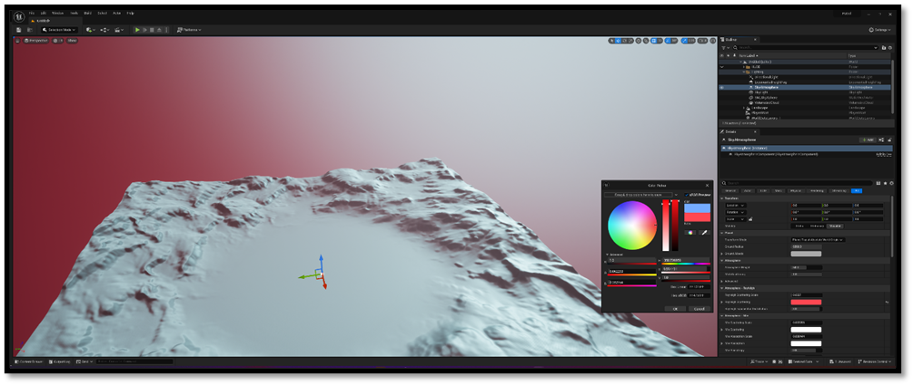
- Save the map in the Content Browser
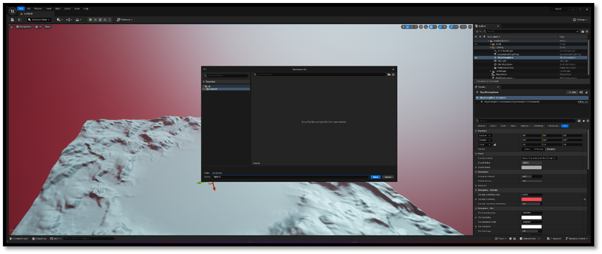
- Generate a unique project ID
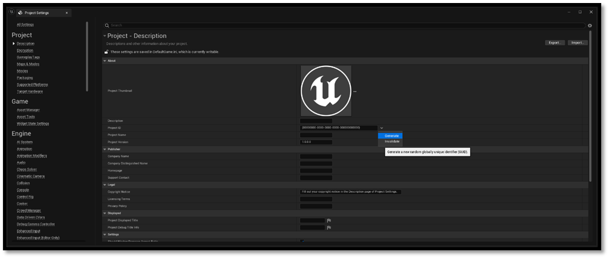
- Setup target hardware
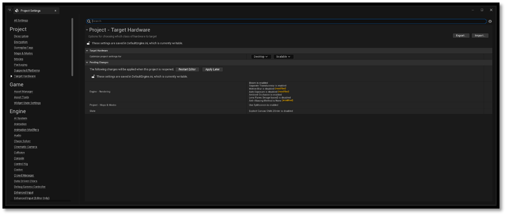
- Change the default map to our new map we just saved
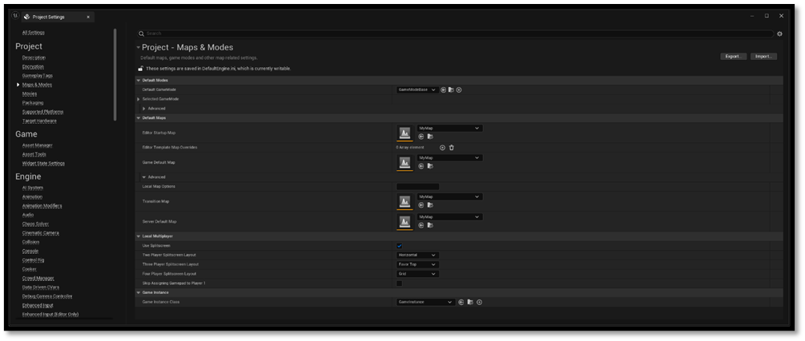
Additional Workflow Items
This appendix collects the VS Code and engine-navigation habits that make working without a heavy IDE practical. Console commands used to live here too; they have moved to the Iteration Speed chapter, where they belong alongside Live Coding.
Looking for files
- If you hit Ctrl+P, you can quickly browse to any file that's been included in the project.
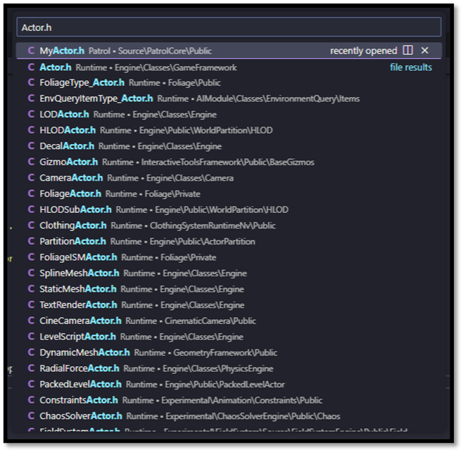
Ctrl+P is only as good as your names. If assets and classes follow a consistent naming convention,
a few keystrokes are enough to find anything: BP_ narrows to Blueprints, M_ to materials, T_
to textures. The convention most Unreal teams start from is
Allar's Unreal Engine style guide. Which convention you
pick matters less than the whole team using the same one.
Creating a Code workspace
- You can add {UE-Root}/Engine/Source/Runtime directory to your project workspace so you have the Unreal source code at your fingertips.
If we add UE's {UE-Root}/Engine/Source/Runtime directory, then we'll also have the Engine source at our fingertips. The key distinction here is that where Visual Studio tries to be smart, VS Code just tries to be fast. With Visual Studio, you're dealing with IntelliSense, which has to parse the entire Engine codebase and run extensive static analysis, and then it has to reason about that codebase while working around the fact that huge chunks of it rely on a custom code generation process... and if you ask me, expecting it to be reliably correct and responsive is just too much to ask. Back when I was using Visual Studio, I found I couldn't rely on IntelliSense, and I'd end up just searching through the API documentation all the time. But the code itself contains the exact same documentation you can cut out the middle-man and Ctrl+P your way straight to an answer, faster than it takes for an IntelliSense completion window to appear. This approach keeps you in the driver's seat.
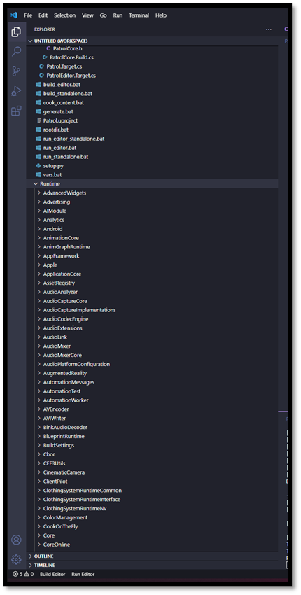
Looking for symbols
- Use CTRL + SHIFT + F to search the entire codebase to see how a symbol is used or referenced
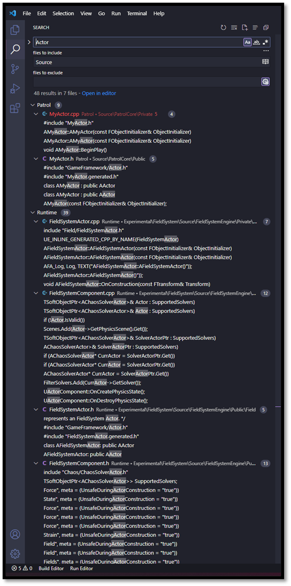
Once the engine source is in your workspace, that search box becomes a general-purpose answering machine. Two uses of it come up constantly.
Search for text you can see in the editor. Any label, menu entry, tooltip or checkbox name in the Unreal Editor is a string literal somewhere in the source. Type it into a codebase-wide search and you land on the code behind that button. This is by far the fastest way to find out how a piece of editor functionality actually works when you want to replicate or extend it. You are not searching for an API whose name you already have to know, you are searching for the words on screen.
Search for a log line. When something logs a warning that does not tell you enough, copy the
message out of the log, strip out the parts that were formatted in at runtime (asset names, counts),
and search for the longest literal fragment that is left. You land on the exact UE_LOG call, which
tells you the conditions under which it fires. You can then put a breakpoint there and run again to
inspect the object that triggered it. This is often the only practical way to attribute a cook or
load warning that names no asset.
Plugin directory
- Use the {UE-Root}/Engine/Plugins directory as a reference on how to structure Unreal modules within your project
A good source of example code is the Engine Plugins directory. If we limit our search there, we can find usage examples that are set up in the same way our project code should be.
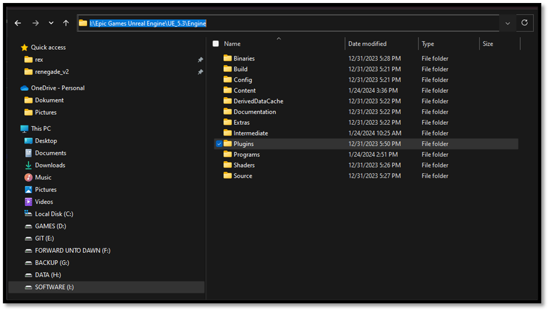
Documentation
- Use the Engine Source Code as documentation
I've found that if you treat the Engine source as documentation in and of itself, and if you optimize your workflow for browsing that source, you'll gain a much more intuitive understanding of it over time.
Everything on the clipboard is text
One last thing, and it has been true since Unreal Engine 1. When you copy something in the editor (Blueprint nodes, material graph nodes, actors selected in a level), what lands on your clipboard is plain text. Paste it into any text editor and you get the full serialized description.
That has practical consequences. You can paste a node graph into a chat message so a colleague can paste it straight back into their editor. You can save a setup in a text file for tomorrow. You can diff two versions of something by pasting both and comparing. And when you are trying to understand what a Blueprint node actually is, pasting it into a text editor tells you its class name, which is then something you can search the engine source for, which brings us back to the point of this whole appendix.